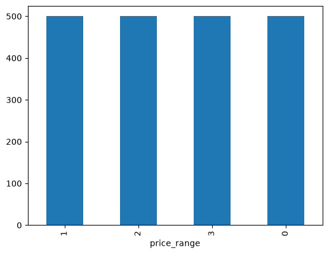
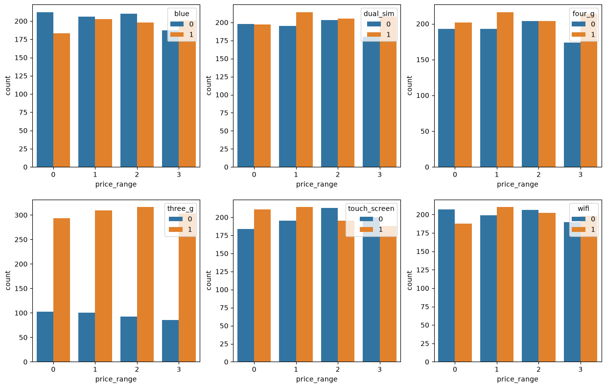
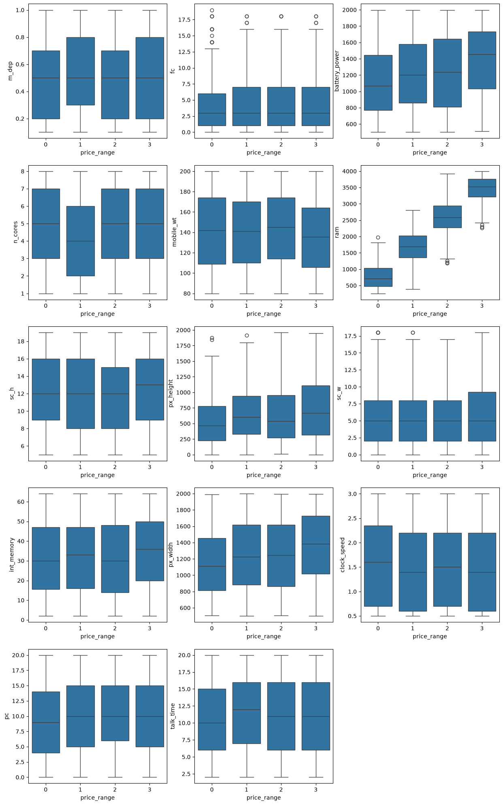
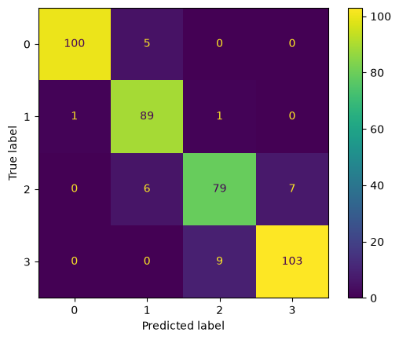

%pip install --upgrade -q matplotlib joblib pandas scikit-learn scipy seaborn xgboostMobiles Price Classification
Machine Learning
Classification
Overview
This notebook investigates the use of machine learning models to classify a mobile phone price range using the following dataset.
Download Labeled Dataset (.csv)
Download Unlabeled Dataset (.csv)
The analysis covers these main steps:
- Data preprocessing and Exploratory Data Analysis (EDA)
- Statistical analysis for feature selection
- Model training
- Model evaluation
To achieve optimal model performance and understand feature dynamics, the experimental framework is implemented in the model training and evaluation which evaluates two distinct feature representation scenarios across four machine learning algorithms:
- Experimental Scenarios:
- Full Feature Set.
- Statistically Selected Feature Set.
- Machine Learning Algorithms:
- K-Nearest Neighbors (KNN): A distance-based classifier.
- Decision Tree: A single-tree model evaluating rule-based splits.
- Random Forest: An ensemble bagging technique combining multiple decision trees to reduce variance and capture non-linear relationships.
- XGBoost: A gradient boosting algorithm that sequentially corrects residual errors.
Additionally, hyperparameter tuning via GridSearchCV is systematically applied across all model configurations to determine optimal model parameters and prevent overfitting.
The primary objective is to perform an end-to-end machine learning process, feature selection, and model choice affect classification performance.
Install and Import Packages
import matplotlib.pyplot as plt
import pandas as pd
import seaborn as snsLoad Dataset
df = pd.read_csv('data/mobiles.csv')
df| battery_power | blue | clock_speed | dual_sim | fc | four_g | int_memory | m_dep | mobile_wt | n_cores | ... | px_height | px_width | ram | sc_h | sc_w | talk_time | three_g | touch_screen | wifi | price_range | |
|---|---|---|---|---|---|---|---|---|---|---|---|---|---|---|---|---|---|---|---|---|---|
| 0 | 842 | 0 | 2.2 | 0 | 1 | 0 | 7 | 0.6 | 188 | 2 | ... | 20 | 756 | 2549 | 9 | 7 | 19 | 0 | 0 | 1 | 1 |
| 1 | 1021 | 1 | 0.5 | 1 | 0 | 1 | 53 | 0.7 | 136 | 3 | ... | 905 | 1988 | 2631 | 17 | 3 | 7 | 1 | 1 | 0 | 2 |
| 2 | 563 | 1 | 0.5 | 1 | 2 | 1 | 41 | 0.9 | 145 | 5 | ... | 1263 | 1716 | 2603 | 11 | 2 | 9 | 1 | 1 | 0 | 2 |
| 3 | 615 | 1 | 2.5 | 0 | 0 | 0 | 10 | 0.8 | 131 | 6 | ... | 1216 | 1786 | 2769 | 16 | 8 | 11 | 1 | 0 | 0 | 2 |
| 4 | 1821 | 1 | 1.2 | 0 | 13 | 1 | 44 | 0.6 | 141 | 2 | ... | 1208 | 1212 | 1411 | 8 | 2 | 15 | 1 | 1 | 0 | 1 |
| ... | ... | ... | ... | ... | ... | ... | ... | ... | ... | ... | ... | ... | ... | ... | ... | ... | ... | ... | ... | ... | ... |
| 1995 | 794 | 1 | 0.5 | 1 | 0 | 1 | 2 | 0.8 | 106 | 6 | ... | 1222 | 1890 | 668 | 13 | 4 | 19 | 1 | 1 | 0 | 0 |
| 1996 | 1965 | 1 | 2.6 | 1 | 0 | 0 | 39 | 0.2 | 187 | 4 | ... | 915 | 1965 | 2032 | 11 | 10 | 16 | 1 | 1 | 1 | 2 |
| 1997 | 1911 | 0 | 0.9 | 1 | 1 | 1 | 36 | 0.7 | 108 | 8 | ... | 868 | 1632 | 3057 | 9 | 1 | 5 | 1 | 1 | 0 | 3 |
| 1998 | 1512 | 0 | 0.9 | 0 | 4 | 1 | 46 | 0.1 | 145 | 5 | ... | 336 | 670 | 869 | 18 | 10 | 19 | 1 | 1 | 1 | 0 |
| 1999 | 510 | 1 | 2.0 | 1 | 5 | 1 | 45 | 0.9 | 168 | 6 | ... | 483 | 754 | 3919 | 19 | 4 | 2 | 1 | 1 | 1 | 3 |
2000 rows × 21 columns
Data Preprocessing and EDA
First, let’s take a look at the datasets overview.
df.info()<class 'pandas.DataFrame'>
RangeIndex: 2000 entries, 0 to 1999
Data columns (total 21 columns):
# Column Non-Null Count Dtype
--- ------ -------------- -----
0 battery_power 2000 non-null int64
1 blue 2000 non-null int64
2 clock_speed 2000 non-null float64
3 dual_sim 2000 non-null int64
4 fc 2000 non-null int64
5 four_g 2000 non-null int64
6 int_memory 2000 non-null int64
7 m_dep 2000 non-null float64
8 mobile_wt 2000 non-null int64
9 n_cores 2000 non-null int64
10 pc 2000 non-null int64
11 px_height 2000 non-null int64
12 px_width 2000 non-null int64
13 ram 2000 non-null int64
14 sc_h 2000 non-null int64
15 sc_w 2000 non-null int64
16 talk_time 2000 non-null int64
17 three_g 2000 non-null int64
18 touch_screen 2000 non-null int64
19 wifi 2000 non-null int64
20 price_range 2000 non-null int64
dtypes: float64(2), int64(19)
memory usage: 328.3 KBBased on the output above, here are some informations about the dataset. - The dataset has 2000 rows and 21 columns. - The target variable is ‘price_range’. - Notice that there is no feature with missing values. - All features are already in numerical form so that they don’t need an encoding for the categorical features.
df['price_range'].value_counts()price_range
1 500
2 500
3 500
0 500
Name: count, dtype: int64df['price_range'].value_counts().plot(kind='bar')
We can see that the dataset is balanced since it has exactly same number of data points for each class in the target variable ‘price_range’.
Checking dan Dropping Duplicated Rows
Let’s check the duplicated rows in train dataset and drop them if exist.
# check and drop duplicated rows (if exist)
total_duplicates = df.duplicated().sum()
print(f'Total duplicated rows: {total_duplicates}')
if total_duplicates:
df = df.drop_duplicates()
print('All duplicated rows has been removed.')
else:
print('No duplicated rows need to be dropped.')Total duplicated rows: 0
No duplicated rows need to be dropped.Data Visualization and Feature Selection
print('-----Unique Values and Mode in Each Column-----\n\n')
all_columns = df.drop(columns=['price_range']).columns.tolist()
for column in all_columns:
print(f'Unique Values in {column}:')
print(df[column].unique().tolist())
print()
print(f'Mode: {df[column].mode()[0]}')
print('='*50)-----Unique Values and Mode in Each Column-----
Unique Values in battery_power:
[842, 1021, 563, 615, 1821, 1859, 1954, 1445, 509, 769, 1520, 1815, 803, 1866, 775, 838, 595, 1131, 682, 772, 1709, 1949, 1602, 503, 961, 519, 956, 1453, 851, 1579, 1568, 1319, 1310, 644, 725, 589, 1725, 790, 560, 1347, 1646, 1253, 1656, 1195, 1514, 1723, 1054, 578, 596, 1547, 1760, 1654, 1457, 1073, 1936, 823, 987, 1757, 1063, 1484, 799, 1156, 1720, 702, 616, 1358, 1242, 1166, 1448, 1407, 605, 1038, 797, 819, 1114, 1234, 1199, 1103, 1589, 999, 1510, 1008, 1127, 1412, 1496, 1083, 668, 1309, 1724, 1977, 885, 879, 1322, 1137, 1355, 1665, 657, 593, 1883, 1732, 543, 1939, 553, 832, 1661, 1657, 1135, 1775, 783, 617, 867, 1804, 1900, 909, 1084, 1308, 1778, 1701, 825, 1379, 1659, 826, 1564, 1957, 1571, 1414, 1790, 645, 1652, 1213, 1272, 866, 536, 523, 1753, 1218, 1537, 786, 1678, 1814, 1101, 1461, 1216, 506, 843, 742, 1692, 1485, 637, 1224, 1356, 1840, 1481, 1296, 1193, 1441, 517, 748, 1126, 1572, 1569, 1270, 1854, 625, 1577, 534, 946, 685, 947, 801, 703, 1165, 1082, 959, 1502, 1380, 1266, 1934, 1905, 1831, 1562, 1490, 1523, 640, 1526, 1989, 609, 1703, 1087, 671, 1472, 765, 1642, 1265, 664, 1277, 1395, 1539, 1049, 1827, 903, 1987, 1154, 1336, 1886, 1551, 850, 660, 1225, 1452, 1686, 1634, 1708, 1151, 1578, 1689, 1488, 1313, 1715, 1442, 528, 1133, 1718, 1330, 1799, 633, 724, 822, 1918, 1891, 1373, 862, 1273, 957, 1617, 893, 1210, 708, 835, 1450, 973, 601, 507, 564, 1559, 754, 728, 1431, 767, 1722, 1992, 1876, 1283, 1281, 1066, 730, 1053, 1611, 793, 1220, 1662, 538, 1733, 1429, 1839, 659, 1953, 1172, 612, 1563, 1191, 1893, 1995, 1517, 1162, 1595, 1329, 928, 1937, 977, 768, 1464, 1177, 1348, 1956, 1751, 1530, 1997, 1707, 894, 1163, 1648, 1170, 508, 1097, 1980, 1504, 1698, 920, 1144, 1430, 972, 662, 1867, 1730, 1882, 580, 1391, 1560, 821, 811, 1034, 618, 654, 576, 667, 869, 635, 1557, 1604, 1182, 848, 1610, 1828, 880, 1394, 1960, 809, 899, 1976, 916, 763, 1864, 1108, 1011, 1067, 1334, 1899, 930, 1058, 1187, 1874, 1482, 1809, 864, 1880, 1138, 1117, 1712, 1836, 1036, 1860, 1375, 1945, 1896, 788, 1323, 1868, 1042, 1479, 1476, 1552, 1454, 1007, 652, 1726, 1029, 1582, 1478, 1178, 707, 755, 912, 651, 1483, 914, 1456, 1503, 1681, 715, 1190, 1755, 1197, 1048, 1887, 1772, 1421, 954, 853, 1469, 902, 1631, 1608, 1991, 1349, 1844, 712, 1406, 1289, 932, 1747, 1128, 513, 1742, 1512, 1986, 965, 1583, 1653, 1433, 1845, 752, 1948, 1077, 1968, 1122, 1588, 1615, 1417, 1697, 1089, 1663, 1889, 857, 1902, 1554, 1337, 1926, 1278, 1773, 1438, 1846, 1260, 512, 581, 1872, 687, 1062, 1074, 1832, 1039, 1059, 1606, 1928, 1875, 1748, 1413, 535, 1780, 1671, 1076, 532, 777, 1217, 1185, 577, 737, 704, 525, 504, 569, 1590, 1350, 641, 1002, 1408, 726, 1544, 1230, 1519, 723, 1168, 1229, 1758, 1290, 574, 1271, 1269, 1288, 1366, 1627, 1974, 587, 934, 1853, 1164, 1232, 1813, 739, 1966, 1219, 1658, 1263, 621, 1175, 561, 1835, 1719, 1770, 1312, 1878, 1871, 922, 1975, 1212, 1958, 557, 539, 1369, 1109, 598, 1944, 1919, 501, 1620, 1227, 1359, 1914, 1645, 1231, 1397, 701, 570, 1993, 955, 924, 600, 518, 1841, 1762, 1112, 709, 1315, 1462, 571, 666, 1994, 966, 568, 1897, 1695, 1623, 1721, 890, 1677, 638, 852, 1979, 710, 1027, 1793, 675, 658, 1694, 804, 1713, 706, 1362, 1527, 1314, 705, 1403, 1486, 781, 986, 1567, 1940, 1717, 1254, 1591, 1640, 663, 1744, 1624, 1188, 817, 863, 1068, 1702, 808, 696, 1981, 614, 1807, 984, 720, 1536, 771, 1303, 1004, 1972, 1822, 1159, 1782, 1884, 798, 802, 1276, 1331, 1996, 1092, 1018, 545, 554, 1264, 1030, 1432, 558, 829, 1741, 1849, 733, 1149, 891, 1911, 550, 969, 1160, 827, 1786, 774, 1368, 1592, 1892, 915, 1848, 1501, 1614, 911, 1647, 967, 1204, 1320, 1800, 1439, 1422, 1929, 1511, 1852, 691, 807, 1113, 721, 805, 918, 1236, 1387, 839, 1593, 1788, 1628, 1965, 833, 1808, 1161, 787, 854, 1184, 1973, 510, 1907, 1489, 1843, 1286, 840, 757, 814, 994, 1550, 623, 1829, 1065, 1425, 642, 1664, 1498, 981, 1673, 603, 1332, 1064, 1444, 906, 841, 878, 1132, 1181, 1497, 1549, 1372, 1005, 989, 1983, 868, 1205, 1284, 626, 1763, 694, 816, 904, 979, 1531, 874, 1558, 582, 764, 743, 1061, 1428, 674, 1625, 907, 1584, 1382, 1745, 1754, 1596, 1660, 1861, 648, 1910, 1923, 1345, 1239, 516, 672, 892, 1130, 1597, 1046, 1035, 1261, 1688, 559, 860, 1090, 686, 818, 1777, 594, 1524, 511, 1402, 919, 1963, 1881, 683, 1633, 1371, 551, 1221, 1000, 1119, 1699, 1099, 1576, 950, 1081, 606, 502, 1632, 1696, 688, 1104, 1727, 1674, 531, 1057, 673, 718, 547, 812, 980, 643, 1925, 1522, 1959, 1043, 1095, 1540, 1342, 1189, 1449, 530, 1044, 1869, 1655, 1245, 846, 741, 1672, 514, 1396, 1542, 745, 1735, 586, 1341, 1970, 1545, 1729, 680, 1106, 831, 1528, 1447, 1344, 921, 1285, 1635, 1851, 727, 877, 1009, 1587, 865, 1930, 1268, 622, 1250, 1100, 815, 1031, 1136, 1300, 732, 1299, 1129, 1487, 1093, 1816, 627, 1895, 713, 1898, 1158, 1451, 1820, 1237, 1515, 1426, 1215, 697, 717, 1971, 1794, 1240, 1180, 1670, 1566, 1935, 913, 1317, 917, 1796, 740, 676, 1020, 896, 1824, 1174, 875, 1370, 991, 584, 1541, 1365, 1644, 871, 888, 1023, 1142, 1901, 1924, 1825, 1275, 1538, 1507, 948, 1384, 1766, 1811, 1988, 1423, 1446, 1398, 1885, 1436, 1998, 1321, 1339, 882, 796, 1012, 1318, 541, 1616, 1071, 1842, 1420, 1805, 610, 1533, 1801, 794, 1325, 1328, 1731, 1791, 856, 714, 951, 1759, 908, 820, 1333, 1352, 1600, 1823, 1581, 630, 1933, 1006, 1134, 599, 1392, 602, 1249, 1404, 1927, 1714, 1201, 1147, 776, 1045, 1638, 1150, 1806, 1834, 520, 565, 1143, 761, 1015, 1183, 881, 1186, 1575, 1343, 834, 844, 1335, 1650, 963, 1837, 1028, 970, 1070, 1908, 1776, 1410, 1280, 1110, 1211, 940, 729, 1494, 1546, 895, 1856, 1202, 1171, 964, 546, 1765, 1830, 1206, 1179, 744, 1148, 1676, 1001, 1086, 634, 1641, 962, 1862, 555, 1194, 1561, 1768, 936, 855, 1307, 1509, 1208, 1812, 770, 1416, 1003, 1967, 1146, 1630, 1125, 1470, 1826, 1521, 1603, 695, 1890, 1152, 1619, 1306, 1424, 942, 1922, 548, 1783, 1969, 1248, 1010, 990, 1982, 1607, 681, 753, 1779, 1855, 731, 926, 1938, 995, 993, 719, 1946, 579, 1072, 1492, 1251, 636, 1354, 583, 1203, 527, 873, 722, 628, 1207, 537, 1565, 1052, 837, 935, 665, 1493, 925, 958, 897, 1680, 983, 592, 689, 1685, 1792, 649, 1920, 1961, 608, 1802, 591, 1367, 1075, 684, 1361, 1259, 759, 1176, 1056, 1405, 1749, 1279, 544, 590, 1327, 1906, 1667, 1913, 1157, 1784, 1262, 1139, 1467, 858]
Mode: 618
==================================================
Unique Values in blue:
[0, 1]
Mode: 0
==================================================
Unique Values in clock_speed:
[2.2, 0.5, 2.5, 1.2, 1.7, 0.6, 2.9, 2.8, 2.1, 1.0, 0.9, 1.1, 2.6, 1.4, 1.6, 2.7, 1.3, 2.3, 2.0, 1.8, 3.0, 1.5, 1.9, 2.4, 0.8, 0.7]
Mode: 0.5
==================================================
Unique Values in dual_sim:
[0, 1]
Mode: 1
==================================================
Unique Values in fc:
[1, 0, 2, 13, 3, 4, 5, 7, 11, 12, 16, 6, 15, 8, 9, 10, 18, 17, 14, 19]
Mode: 0
==================================================
Unique Values in four_g:
[0, 1]
Mode: 1
==================================================
Unique Values in int_memory:
[7, 53, 41, 10, 44, 22, 24, 9, 33, 17, 52, 46, 13, 23, 49, 19, 39, 47, 38, 8, 57, 51, 21, 5, 60, 61, 6, 11, 50, 34, 20, 27, 42, 40, 64, 14, 63, 43, 16, 48, 12, 55, 36, 30, 45, 29, 58, 25, 3, 54, 15, 37, 31, 32, 4, 18, 2, 56, 26, 35, 59, 28, 62]
Mode: 27
==================================================
Unique Values in m_dep:
[0.6, 0.7, 0.9, 0.8, 0.1, 0.5, 1.0, 0.3, 0.4, 0.2]
Mode: 0.1
==================================================
Unique Values in mobile_wt:
[188, 136, 145, 131, 141, 164, 139, 187, 174, 93, 182, 177, 159, 198, 185, 196, 121, 101, 81, 156, 199, 114, 111, 132, 143, 96, 200, 88, 150, 107, 100, 157, 160, 119, 87, 152, 166, 110, 118, 162, 127, 109, 102, 104, 148, 180, 128, 134, 144, 168, 155, 165, 80, 138, 142, 90, 197, 172, 116, 85, 163, 178, 171, 103, 83, 140, 194, 146, 192, 106, 135, 153, 89, 82, 130, 189, 181, 99, 184, 195, 108, 133, 179, 147, 137, 190, 176, 84, 97, 124, 183, 113, 92, 95, 151, 117, 94, 173, 105, 115, 91, 112, 123, 129, 154, 191, 175, 86, 98, 125, 126, 158, 170, 161, 193, 169, 120, 149, 186, 122, 167]
Mode: 182
==================================================
Unique Values in n_cores:
[2, 3, 5, 6, 1, 8, 4, 7]
Mode: 4
==================================================
Unique Values in pc:
[2, 6, 9, 14, 7, 10, 0, 15, 1, 18, 17, 11, 16, 4, 20, 13, 3, 19, 8, 5, 12]
Mode: 10
==================================================
Unique Values in px_height:
[20, 905, 1263, 1216, 1208, 1004, 381, 512, 386, 1137, 248, 151, 607, 344, 356, 862, 984, 441, 658, 902, 1314, 974, 407, 466, 201, 291, 550, 511, 187, 1171, 1358, 413, 85, 178, 311, 1134, 429, 609, 347, 1448, 434, 1725, 685, 880, 1580, 186, 202, 27, 1025, 885, 1042, 1382, 546, 1013, 690, 667, 822, 581, 265, 127, 916, 361, 322, 753, 504, 651, 1565, 108, 459, 205, 570, 1172, 160, 4, 763, 339, 1040, 166, 1168, 990, 319, 1397, 708, 1077, 928, 516, 96, 666, 557, 1605, 1226, 769, 403, 177, 942, 1572, 476, 1233, 836, 824, 391, 320, 325, 125, 846, 1770, 293, 1633, 1198, 768, 70, 117, 1158, 1055, 635, 275, 1445, 1242, 597, 538, 59, 819, 179, 1259, 396, 713, 262, 622, 327, 522, 313, 226, 605, 692, 1386, 304, 1590, 229, 839, 507, 436, 756, 387, 1265, 1852, 875, 140, 577, 975, 510, 583, 674, 1125, 747, 1612, 116, 554, 811, 730, 660, 450, 1223, 1109, 45, 299, 506, 1045, 393, 650, 433, 1176, 218, 564, 986, 561, 65, 420, 1365, 619, 849, 611, 953, 642, 1417, 247, 710, 718, 1100, 938, 825, 286, 1273, 295, 852, 1277, 129, 701, 309, 213, 1112, 199, 55, 1230, 1052, 541, 809, 1738, 404, 759, 42, 397, 964, 233, 1022, 411, 954, 1528, 416, 638, 231, 574, 148, 1290, 632, 529, 1170, 169, 105, 793, 490, 1201, 246, 417, 1177, 78, 323, 707, 457, 936, 912, 1914, 526, 156, 865, 1552, 1097, 372, 1285, 302, 594, 303, 1858, 32, 590, 235, 630, 357, 475, 1054, 555, 1360, 142, 681, 104, 637, 410, 1830, 802, 56, 1053, 221, 1728, 63, 418, 854, 1869, 185, 170, 454, 866, 44, 1331, 741, 520, 114, 1153, 474, 39, 419, 584, 312, 19, 207, 363, 209, 159, 649, 1132, 1392, 1001, 712, 384, 119, 627, 1086, 195, 14, 745, 253, 333, 629, 1715, 513, 13, 1243, 300, 58, 1107, 134, 176, 1236, 336, 1116, 1010, 1453, 788, 1301, 463, 188, 1028, 1419, 1471, 168, 130, 481, 1411, 79, 1187, 77, 493, 1173, 634, 639, 431, 71, 111, 798, 408, 373, 1362, 743, 447, 30, 162, 346, 727, 180, 1641, 269, 250, 1186, 379, 264, 1486, 694, 579, 495, 315, 329, 548, 531, 191, 823, 841, 21, 966, 270, 781, 126, 228, 1091, 1452, 398, 449, 1184, 675, 1792, 1058, 592, 810, 533, 558, 1017, 765, 947, 754, 453, 282, 494, 281, 6, 292, 164, 631, 897, 268, 861, 331, 1064, 509, 957, 236, 980, 1789, 831, 636, 518, 725, 157, 1142, 840, 401, 395, 48, 982, 478, 1215, 683, 536, 83, 249, 803, 1596, 364, 946, 1428, 1613, 1127, 691, 1802, 751, 859, 206, 1673, 263, 97, 1213, 189, 628, 837, 1087, 251, 767, 389, 920, 1027, 271, 369, 1258, 1345, 613, 430, 1467, 120, 762, 600, 1350, 1597, 402, 52, 934, 214, 612, 1111, 163, 729, 1079, 338, 1698, 1108, 951, 1197, 473, 1294, 782, 464, 137, 492, 1250, 385, 427, 1024, 240, 886, 183, 88, 1016, 80, 569, 276, 1131, 551, 553, 1391, 981, 680, 687, 1060, 217, 1140, 832, 935, 446, 1308, 1002, 150, 1248, 437, 593, 693, 234, 1545, 1103, 91, 371, 1446, 181, 1311, 1791, 1568, 706, 871, 1074, 501, 833, 485, 182, 165, 192, 1156, 377, 709, 543, 113, 1114, 461, 1430, 471, 806, 204, 545, 112, 290, 1039, 1485, 1122, 462, 1384, 1502, 589, 82, 68, 689, 208, 1339, 722, 717, 1298, 618, 1214, 193, 22, 1464, 280, 337, 1036, 1347, 778, 482, 591, 901, 715, 172, 867, 451, 1119, 1299, 671, 1404, 856, 562, 997, 606, 445, 985, 1617, 375, 1795, 486, 757, 273, 491, 448, 1713, 438, 698, 965, 1399, 532, 8, 154, 198, 860, 109, 961, 243, 1626, 480, 123, 400, 190, 626, 1, 349, 1686, 1455, 95, 580, 297, 1047, 1150, 641, 653, 103, 517, 785, 761, 1179, 673, 472, 412, 977, 359, 224, 714, 843, 308, 519, 792, 382, 342, 118, 540, 18, 987, 535, 1092, 994, 210, 144, 1222, 1178, 75, 881, 351, 1842, 758, 1323, 1175, 647, 1102, 215, 945, 1096, 575, 352, 1920, 721, 777, 458, 256, 370, 1571, 573, 90, 138, 983, 149, 625, 521, 1530, 442, 152, 29, 87, 648, 341, 993, 43, 1262, 815, 1587, 750, 820, 171, 960, 624, 1295, 1164, 829, 1734, 76, 970, 578, 655, 1692, 358, 64, 259, 873, 858, 1405, 237, 1949, 335, 1638, 1480, 1220, 1011, 1081, 1512, 1136, 1145, 477, 547, 1194, 146, 1895, 1537, 821, 774, 284, 465, 705, 38, 51, 850, 426, 1578, 1463, 1432, 145, 847, 868, 663, 1749, 586, 409, 35, 1008, 952, 244, 716, 804, 787, 704, 991, 489, 1518, 855, 1261, 115, 1203, 818, 719, 1162, 330, 956, 444, 1003, 227, 334, 1281, 898, 46, 1191, 89, 368, 239, 654, 853, 686, 992, 614, 1105, 775, 1482, 737, 1211, 314, 527, 874, 657, 1209, 15, 813, 173, 378, 805, 1901, 1573, 360, 98, 703, 919, 879, 1287, 211, 890, 1260, 621, 328, 1307, 497, 219, 1163, 24, 468, 1272, 503, 1495, 1333, 267, 1070, 158, 184, 238, 800, 670, 81, 1043, 812, 274, 1438, 1157, 1511, 925, 1185, 1706, 1603, 1207, 423, 62, 405, 678, 1619, 864, 870, 1379, 220, 306, 1123, 796, 1021, 995, 1244, 1240, 194, 1076, 1238, 135, 5, 549, 838, 739, 3, 963, 1621, 887, 567, 496, 1245, 682, 724, 257, 17, 439, 153, 1699, 530, 755, 1406, 1826, 50, 817, 212, 366, 174, 882, 688, 1012, 294, 958, 1328, 354, 1709, 1099, 783, 122, 100, 1221, 599, 1274, 1878, 318, 1353, 86, 340, 602, 643, 1335, 1541, 1094, 272, 394, 903, 923, 362, 1135, 66, 924, 376, 1083, 659, 534, 285, 343, 289, 1703, 907, 287, 1151, 1085, 1078, 1750, 1475, 1836, 283, 539, 440, 0, 467, 1325, 1313, 552, 443, 576, 596, 10, 699, 23, 1063, 1421, 623, 1563, 203, 773, 332, 742, 1420, 1801, 1693, 31, 1098, 1765, 760, 2, 469, 1180, 155, 1032, 40, 1385, 672, 1088, 499, 571, 563, 944, 1138, 161, 500, 608, 277, 225, 1310, 930, 835, 664, 460, 1581, 9, 7, 278, 1288, 979, 913, 1252, 1128, 922, 1874, 484, 1015, 1303, 406, 124, 588, 776, 1117, 380, 603, 766, 1499, 988, 1618, 857, 73, 973, 245, 937, 1524, 1649, 254, 1790, 1304, 948, 1161, 242, 1569, 978, 1147, 910, 26, 1080, 744, 1466, 764, 53, 728, 1225, 367, 424, 84, 102, 258, 1279, 523, 296, 1364, 950, 1960, 808, 94, 1684, 1050, 1658, 67, 1257, 11, 889, 1284, 911, 927, 1041, 525, 348, 1899, 1188, 679, 1224, 223, 167, 487, 74, 931, 921, 1057, 616, 740, 542, 383, 1442, 1352, 266, 321, 1451, 1048, 470, 1217, 298, 36, 617, 786, 645, 1371, 1332, 428, 1546, 1210, 789, 390, 110, 1330, 317, 892, 388, 914, 1661, 665, 662, 661, 560, 1315, 479, 888, 652, 1652, 976, 455, 1196, 1694, 610, 1457, 241, 528, 915, 483]
Mode: 347
==================================================
Unique Values in px_width:
[756, 1988, 1716, 1786, 1212, 1654, 1018, 1149, 836, 1224, 874, 1005, 748, 1440, 563, 1864, 1850, 810, 878, 1064, 1854, 1385, 822, 788, 1245, 1434, 645, 1075, 1311, 1263, 1739, 654, 1152, 1919, 881, 1249, 815, 1307, 730, 1613, 967, 1932, 714, 1456, 1652, 1810, 1791, 774, 1433, 1832, 1383, 629, 1287, 804, 1036, 1449, 820, 713, 683, 969, 975, 547, 1353, 1570, 1618, 1858, 1781, 1225, 603, 1724, 1217, 1026, 638, 1413, 1242, 1071, 778, 1552, 1486, 1206, 1616, 1752, 1122, 1049, 1894, 741, 1118, 1203, 1402, 1924, 802, 1105, 1990, 1179, 891, 1684, 961, 1317, 984, 520, 902, 1504, 1634, 1796, 1846, 1869, 1471, 1974, 513, 1244, 1661, 973, 771, 989, 1954, 1338, 1712, 863, 1376, 786, 1965, 1732, 1398, 829, 792, 580, 1056, 1264, 1248, 669, 1686, 1539, 1042, 1926, 616, 1131, 1697, 536, 1269, 1298, 1967, 1025, 800, 1359, 1996, 1013, 590, 1925, 1989, 826, 1983, 1545, 1533, 621, 1272, 1729, 974, 1554, 1611, 1937, 1942, 845, 627, 842, 1737, 1199, 1740, 648, 1136, 1220, 879, 1065, 831, 1191, 1631, 588, 500, 1698, 1299, 898, 1381, 1464, 539, 751, 1497, 1215, 1948, 1542, 1235, 1345, 589, 1182, 1052, 1429, 873, 1478, 1460, 705, 1666, 1077, 1020, 1516, 1499, 583, 1958, 1995, 642, 1178, 1404, 1040, 1453, 1677, 517, 1560, 1226, 1200, 1647, 1308, 1615, 687, 637, 1606, 1543, 980, 1441, 1009, 1754, 860, 1108, 673, 1758, 886, 1485, 1038, 946, 1462, 1604, 1882, 1816, 765, 1980, 1559, 1928, 1529, 952, 1517, 1741, 1596, 1564, 1222, 692, 1617, 1571, 1247, 1767, 1935, 1933, 1509, 954, 662, 888, 527, 1493, 1929, 764, 1092, 1891, 1699, 1664, 763, 572, 1963, 1489, 1294, 997, 655, 1458, 1243, 519, 566, 515, 1168, 882, 776, 564, 1975, 1388, 1130, 754, 1726, 1876, 709, 557, 1914, 775, 1910, 1923, 1370, 994, 1078, 724, 1104, 1795, 1442, 1023, 1361, 652, 935, 1292, 1256, 1364, 682, 1688, 1898, 1438, 1463, 1584, 1059, 1253, 939, 986, 1029, 1280, 1565, 1331, 1922, 992, 1186, 1920, 1866, 981, 1195, 1706, 749, 1711, 681, 1510, 814, 1814, 1233, 721, 1670, 550, 699, 1138, 1903, 817, 1126, 1139, 926, 1506, 726, 1753, 794, 1161, 1350, 619, 660, 1468, 1705, 1476, 1033, 559, 1223, 956, 1797, 596, 574, 990, 1053, 858, 758, 1495, 1352, 1304, 1205, 562, 585, 1629, 1798, 545, 1657, 1341, 1058, 1744, 740, 1133, 889, 1719, 1285, 1905, 1158, 1325, 772, 1743, 1208, 1050, 1366, 899, 1884, 867, 884, 1358, 998, 862, 1785, 799, 793, 695, 728, 1940, 1259, 790, 1594, 548, 1911, 1649, 1262, 1972, 1484, 1090, 1439, 592, 1777, 870, 1106, 948, 1393, 982, 1586, 1579, 644, 1157, 750, 1472, 1337, 1663, 861, 773, 1313, 1849, 1151, 1807, 1763, 1827, 1916, 1580, 1582, 1234, 1917, 1759, 848, 1803, 915, 1354, 1143, 632, 1642, 1450, 1587, 1665, 1815, 739, 963, 1508, 1000, 544, 1627, 759, 1416, 1088, 760, 857, 1100, 676, 658, 1239, 1901, 1813, 1578, 1878, 1109, 1171, 1949, 1722, 1809, 964, 1237, 1082, 828, 1241, 1710, 1793, 1951, 1704, 1897, 809, 1306, 1771, 1536, 1987, 1022, 522, 1883, 1787, 910, 781, 1501, 1176, 684, 1838, 904, 1682, 1715, 906, 1230, 1315, 599, 1302, 727, 1096, 1173, 816, 1970, 1101, 1089, 901, 1701, 1232, 630, 1184, 1991, 510, 1511, 747, 1947, 1421, 672, 1031, 575, 1282, 1435, 1651, 516, 1703, 1048, 1873, 1465, 1477, 1748, 1159, 1630, 1293, 1162, 1747, 736, 1418, 757, 1750, 549, 818, 938, 1505, 1116, 991, 577, 1374, 1251, 1674, 1016, 1327, 501, 1621, 1532, 811, 1318, 1655, 1702, 1862, 1301, 1605, 718, 1742, 1558, 766, 1799, 1658, 1998, 1491, 650, 907, 1595, 895, 1589, 1384, 1733, 922, 1291, 1648, 723, 999, 1300, 819, 1238, 643, 1633, 735, 1339, 1445, 1424, 883, 1452, 806, 849, 1812, 947, 1895, 1123, 1409, 1675, 1930, 1518, 859, 821, 1671, 1865, 1448, 896, 605, 1330, 670, 1909, 1185, 1008, 1668, 1482, 1229, 823, 1326, 932, 1641, 1051, 1889, 1982, 893, 1163, 962, 697, 1312, 1469, 704, 671, 1583, 791, 1391, 1336, 1638, 690, 1073, 1660, 1395, 783, 1145, 1169, 1360, 1423, 1577, 1181, 1228, 1523, 1513, 812, 1081, 1406, 1001, 1500, 530, 832, 1267, 928, 1382, 1011, 1076, 688, 1403, 734, 1968, 1165, 1481, 1569, 1367, 1125, 1913, 1155, 618, 1084, 1723, 1514, 937, 1119, 1556, 1819, 1394, 1197, 1956, 614, 1334, 558, 507, 1190, 1973, 506, 1019, 674, 1420, 1377, 1538, 511, 541, 940, 1659, 983, 1219, 1735, 719, 1915, 917, 1808, 1908, 1977, 930, 1877, 1997, 1284, 661, 698, 1782, 1261, 1902, 1667, 1960, 1591, 890, 864, 1994, 1392, 1427, 1731, 875, 1348, 635, 622, 653, 570, 1356, 1553, 1985, 663, 1976, 1761, 1520, 1768, 631, 843, 1623, 1964, 1801, 1992, 571, 1746, 1055, 877, 830, 1805, 722, 646, 1309, 1079, 1087, 1626, 521, 1515, 710, 1401, 1432, 1637, 1068, 755, 1531, 656, 869, 1555, 1764, 1046, 594, 1896, 1320, 1687, 1069, 1170, 1347, 1324, 966, 846, 1389, 607, 1636, 1305, 1966, 1602, 1607, 1490, 1762, 1455, 556, 1014, 1411, 525, 1843, 797, 1043, 565, 887, 639, 1804, 1581, 912, 745, 1278, 1344, 1892, 1788, 1422, 1037, 551, 1841, 876, 620, 1012, 768, 807, 1335, 1544, 1378, 707, 1609, 1593, 1057, 1032, 1473, 1656, 1134, 1756, 711, 1899, 679, 1252, 1387, 1886, 1144, 613, 909, 798, 1676, 1147, 1738, 1362, 1461, 1062, 598, 1316, 1694, 1783, 1524, 1728, 1678, 1622, 979, 1310, 970, 1931, 1528, 1614, 1437, 1004, 1683, 784, 1066, 1400, 1766, 1662, 1773, 1274, 1454, 1210, 568, 533, 696, 640, 1496, 1769, 855, 1167, 1386, 1836, 941, 1039, 518, 865, 1156, 1227, 1893, 1273, 686, 1708, 1340, 581, 1709, 1981, 1681, 1007, 1027, 1527, 1619, 694, 1103, 1713, 1250, 850, 1132, 1957, 1492, 903, 540, 512, 1098, 1717, 1193, 1639, 1431, 1880, 925, 1363, 977, 978, 1551, 1857, 1240, 1021, 703, 675, 1945, 1802, 1010, 892, 636, 1407, 1567, 584, 1349, 1692, 1183, 866, 1645, 1790, 1373, 1775, 853, 1546, 569, 1405, 1776, 1727, 1780, 1718, 1399, 542, 1003, 647, 1575, 1196, 1950, 738, 851, 1175, 1806, 1944, 623, 1372, 1459, 1853, 844, 833, 761, 509, 1487, 1811, 700, 1646, 1288, 1028, 1550, 1483, 1952, 1503, 1375, 665, 1540, 1148, 1083, 1164, 770, 1207, 1848, 1829, 1673, 1180, 1258, 1127, 742, 1099, 1986, 1566, 503, 508, 1289, 1290, 1113, 1111, 957, 1035, 1115, 1150, 708, 712, 529, 839, 1851, 1030, 538, 732, 1415, 1643, 1211, 591, 918, 1794, 1817, 908, 1177, 1006, 1371, 1635, 1534, 1135, 528, 1430, 1839, 1760, 1343, 1831, 1414, 1904, 789, 1852, 1231, 1962, 951, 1129, 1351, 840, 678, 1608, 615, 725, 1888, 1436, 769, 1870, 1451, 1255, 872, 1275, 534, 1254, 1879, 1603, 593, 1800, 1912, 1696, 1141, 610, 1721, 1466, 1397, 582, 657, 1979, 1396, 537, 885, 651, 737, 854, 1426, 743, 1890, 1632]
Mode: 874
==================================================
Unique Values in ram:
[2549, 2631, 2603, 2769, 1411, 1067, 3220, 700, 1099, 513, 3946, 3826, 1482, 2680, 373, 568, 3554, 3752, 1835, 2337, 2819, 3283, 1433, 1037, 2583, 2782, 3763, 3286, 2373, 478, 3532, 508, 2227, 3845, 1262, 1326, 2113, 3429, 3169, 2150, 2484, 3339, 1878, 1629, 504, 1152, 3587, 2296, 1270, 3238, 2059, 2053, 3112, 1440, 2908, 2552, 905, 3963, 2056, 2910, 1457, 431, 470, 2148, 2955, 3366, 3068, 3834, 1050, 3993, 3378, 2192, 392, 3709, 590, 1814, 907, 1449, 3448, 1837, 3464, 2593, 3484, 2009, 2048, 837, 854, 3210, 2746, 2334, 2822, 1971, 1410, 349, 1418, 3616, 880, 1601, 1412, 1692, 2600, 1308, 2413, 1047, 1204, 1799, 2676, 2597, 3029, 2343, 2016, 2213, 790, 3182, 3472, 2871, 3187, 1945, 488, 1214, 2598, 3242, 3534, 3426, 2488, 3255, 2863, 1496, 3801, 666, 3799, 1366, 2962, 2399, 2338, 2700, 2235, 3825, 284, 1427, 1324, 398, 3685, 2390, 278, 3556, 2196, 2268, 2965, 2341, 3557, 1354, 2147, 505, 1394, 374, 506, 3702, 1078, 2945, 2981, 490, 536, 2317, 3704, 2126, 2050, 2462, 1260, 3770, 1886, 3323, 2060, 3926, 2177, 728, 2478, 2842, 1617, 1472, 764, 3965, 3693, 797, 1687, 2940, 1545, 2505, 2243, 3600, 3971, 2844, 1665, 3355, 1866, 1287, 1046, 1441, 690, 2504, 2677, 2984, 1362, 3629, 3559, 2571, 2107, 1022, 711, 3117, 978, 1869, 1179, 3844, 593, 588, 3836, 2669, 2958, 3031, 3388, 2377, 2458, 2766, 3054, 3791, 625, 3256, 707, 3755, 1733, 720, 3560, 2311, 3846, 1717, 3800, 1767, 1846, 829, 2986, 2394, 2169, 1181, 575, 2977, 532, 1702, 1074, 3352, 1027, 2039, 461, 527, 3271, 606, 2513, 1675, 2698, 1129, 468, 1210, 3086, 1595, 2332, 2589, 3760, 1851, 417, 294, 3576, 3945, 927, 2044, 1477, 3161, 3660, 1604, 2211, 3822, 3922, 1203, 447, 1652, 3608, 1228, 1499, 3321, 1206, 952, 3927, 311, 955, 1109, 2969, 725, 1655, 3490, 1774, 3615, 714, 2768, 3739, 610, 715, 663, 1725, 834, 3865, 3059, 651, 796, 785, 3252, 1322, 2832, 1615, 2125, 990, 1213, 2500, 2801, 3451, 1201, 3139, 1938, 3185, 2111, 2369, 3625, 1051, 1036, 2938, 2855, 2727, 2973, 2581, 2690, 916, 2563, 3359, 941, 2280, 827, 473, 1274, 364, 3699, 2927, 1470, 2616, 2915, 2686, 1243, 3264, 2261, 2993, 706, 2542, 2523, 336, 2457, 418, 3917, 1246, 2971, 2324, 3121, 3333, 3475, 2360, 2895, 3652, 3097, 2101, 3918, 3869, 732, 3684, 3969, 1414, 1892, 3131, 2532, 3215, 1529, 2403, 3419, 3648, 1974, 2806, 2239, 582, 3890, 1141, 2511, 3838, 2734, 2330, 2244, 808, 1587, 2492, 2122, 1122, 3021, 624, 3937, 1797, 1458, 3348, 1834, 2775, 1277, 457, 438, 985, 3701, 1052, 1175, 1070, 3411, 301, 489, 2756, 2612, 1724, 2190, 1900, 3915, 1043, 3817, 2362, 1107, 2982, 2042, 1343, 2610, 2335, 1614, 1138, 604, 3955, 258, 1066, 1731, 3860, 3630, 1965, 1459, 2323, 3291, 3272, 918, 3488, 3961, 463, 3644, 1713, 429, 2765, 2084, 1125, 1223, 3672, 3100, 343, 1970, 2728, 3635, 2180, 3864, 1155, 3566, 864, 869, 591, 1333, 2208, 1955, 3416, 3803, 574, 2129, 1948, 2978, 1619, 3716, 3454, 3777, 2712, 1434, 3968, 3383, 3278, 3970, 2674, 2776, 2336, 2430, 891, 3886, 1711, 2856, 2447, 814, 2951, 3653, 1891, 701, 2811, 1701, 1853, 2445, 2287, 2003, 3595, 1726, 3952, 850, 1446, 1300, 719, 988, 2606, 2912, 2339, 1028, 3173, 1667, 1897, 3269, 445, 1073, 665, 3129, 3501, 3461, 3206, 3717, 861, 2885, 2777, 1017, 980, 3309, 3607, 1257, 759, 3720, 475, 1336, 1185, 705, 3483, 1183, 3373, 565, 3153, 3421, 316, 448, 2366, 3881, 462, 1480, 1087, 2711, 2144, 1165, 2998, 2249, 752, 1409, 3072, 1305, 3597, 3132, 3856, 1524, 3673, 3293, 3035, 584, 2675, 2382, 1391, 2346, 1076, 643, 783, 3809, 2104, 1762, 3137, 1756, 3663, 2437, 1432, 1620, 961, 2608, 514, 2304, 933, 1896, 3655, 1973, 2183, 824, 1254, 3622, 1704, 1624, 2574, 950, 273, 446, 1510, 751, 3393, 3771, 2735, 2253, 452, 1419, 969, 3441, 3786, 2710, 3533, 1735, 2298, 2027, 2406, 2419, 995, 2078, 1145, 626, 1509, 3371, 297, 3508, 2385, 1301, 2167, 3914, 2312, 2297, 411, 3226, 740, 3878, 3406, 2440, 3959, 3703, 3714, 337, 3176, 1205, 2473, 1229, 2896, 520, 1378, 3254, 1803, 2501, 3762, 1796, 2630, 1380, 3487, 3015, 3204, 433, 1906, 898, 2799, 2020, 770, 305, 2953, 1671, 3772, 2870, 2577, 2246, 2405, 3377, 3619, 1184, 3713, 3798, 1026, 1086, 2236, 1303, 3048, 616, 3764, 419, 2858, 820, 3387, 3447, 1403, 2295, 2073, 3872, 302, 1519, 404, 595, 1663, 2764, 2614, 1094, 2826, 2496, 2103, 966, 2172, 3916, 3902, 2487, 363, 3233, 3076, 1513, 542, 3481, 3991, 1790, 509, 282, 3006, 1913, 3746, 3941, 3925, 424, 1284, 277, 485, 3002, 2893, 1406, 629, 3724, 3835, 2376, 3438, 2655, 3361, 3535, 2587, 2736, 676, 2941, 3336, 3796, 3654, 2934, 2889, 3315, 1993, 2509, 3165, 286, 776, 3213, 716, 3486, 3237, 1944, 1436, 3190, 1334, 3657, 2080, 1609, 3078, 1968, 3358, 1539, 942, 3669, 3612, 2351, 1285, 515, 654, 2540, 3412, 2547, 1369, 2942, 2812, 3497, 619, 1475, 1950, 3592, 3573, 1329, 3568, 1947, 1998, 3302, 3884, 1656, 911, 3892, 3897, 656, 1653, 860, 2197, 3458, 2066, 3676, 1518, 1018, 1360, 3449, 2524, 703, 1251, 1732, 1252, 2146, 1927, 3328, 1172, 3598, 1511, 3119, 3647, 3148, 2829, 3998, 999, 1808, 589, 3317, 670, 2173, 1561, 1401, 1275, 1464, 3019, 1083, 3538, 2493, 3726, 1531, 601, 2991, 3912, 309, 323, 1489, 3731, 667, 1241, 3142, 1444, 934, 3863, 3506, 348, 550, 971, 3984, 2019, 1870, 1352, 570, 546, 3624, 2944, 1209, 2752, 3868, 3087, 947, 1484, 347, 3227, 3299, 2641, 2622, 929, 1211, 511, 3034, 2438, 3744, 1377, 3520, 1699, 1095, 325, 1649, 1898, 2609, 2265, 1445, 356, 523, 3745, 1402, 2085, 587, 2030, 816, 3705, 2800, 3773, 1754, 1904, 2705, 3537, 1370, 1222, 3102, 2648, 3162, 1368, 724, 912, 2784, 793, 560, 312, 545, 1591, 893, 2514, 1032, 819, 3833, 2043, 1816, 2166, 2469, 2575, 1375, 673, 2301, 1781, 2248, 921, 391, 1719, 3262, 2693, 441, 1267, 687, 2890, 1737, 887, 2389, 3431, 3601, 2459, 3230, 3646, 2200, 3862, 3077, 621, 2372, 2857, 3143, 3197, 2262, 815, 3022, 2573, 2678, 1282, 2074, 1080, 2867, 1075, 3063, 2479, 2814, 2094, 2315, 2519, 735, 1386, 3260, 2022, 1716, 1454, 2290, 3940, 2219, 2495, 2361, 1783, 931, 1344, 1882, 2865, 757, 3469, 3300, 2719, 3012, 2836, 594, 2968, 892, 467, 345, 3033, 2110, 3105, 874, 3681, 737, 315, 2286, 2392, 1857, 3305, 959, 2635, 1936, 3637, 896, 2349, 774, 3397, 3964, 1887, 2114, 1542, 3038, 2481, 841, 3565, 1958, 2454, 3392, 262, 530, 2562, 2632, 259, 688, 2554, 3859, 571, 402, 878, 2130, 454, 2638, 1824, 876, 2706, 659, 455, 2378, 2278, 3436, 3424, 401, 681, 3212, 2036, 1642, 3465, 3900, 1105, 2064, 1142, 1060, 2381, 1339, 2560, 285, 2476, 1862, 3178, 733, 756, 1905, 2636, 2014, 3056, 465, 1108, 851, 1430, 362, 2456, 3700, 2620, 437, 3774, 1218, 696, 3407, 2086, 1356, 3571, 2132, 3209, 2096, 1273, 3623, 368, 3130, 3784, 3885, 1494, 1471, 2001, 1486, 1321, 1877, 3499, 2124, 1221, 2316, 1068, 1930, 1316, 1742, 3265, 2115, 3144, 1571, 1817, 3340, 2790, 577, 3593, 1355, 832, 436, 722, 2802, 1780, 1247, 3066, 403, 2518, 1069, 2651, 2974, 657, 3372, 1628, 3721, 763, 792, 1568, 1276, 2520, 3423, 1868, 2171, 780, 712, 1012, 318, 3948, 1161, 3707, 2926, 471, 1220, 2754, 1005, 2439, 2302, 857, 3518, 2821, 3442, 1309, 1812, 1384, 1348, 3957, 1212, 1382, 838, 378, 909, 3632, 3396, 1861, 2528, 1280, 2189, 531, 2331, 794, 2644, 1666, 2157, 1196, 2072, 1590, 2916, 726, 3577, 2627, 685, 1693, 2137, 3696, 1342, 1379, 1164, 908, 1019, 2299, 3011, 1543, 3692, 2753, 2156, 2637, 331, 3073, 422, 2293, 3958, 432, 298, 3847, 1921, 2423, 1658, 2289, 2182, 2184, 2872, 2367, 1919, 3296, 1593, 2933, 3154, 3563, 1907, 324, 1404, 2738, 2722, 2294, 1424, 1133, 555, 3785, 3675, 435, 3183, 3495, 2647, 702, 1836, 3894, 2424, 2671, 1146, 1422, 1115, 456, 2750, 2273, 2355, 2328, 558, 1345, 425, 1208, 267, 3122, 2929, 1598, 2052, 1249, 412, 263, 639, 1550, 1646, 3695, 3235, 2258, 1825, 3887, 1813, 817, 3614, 2013, 543, 3400, 2623, 1400, 3127, 2803, 3564, 2515, 3930, 3476, 2666, 1695, 3510, 2033, 1686, 862, 957, 3494, 3083, 313, 3282, 1149, 3899, 2785, 3761, 2240, 1875, 920, 361, 1540, 1077, 3610, 512, 3024, 1610, 2201, 3338, 3473, 2203, 940, 1798, 1567, 1491, 3905, 291, 1788, 3322, 1751, 1641, 2854, 3115, 3259, 1612, 2319, 1258, 3555, 524, 3541, 3437, 1637, 3064, 1393, 1633, 3284, 464, 1234, 292, 2521, 2658, 879, 1743, 3330, 562, 1659, 1338, 2992, 3249, 2725, 586, 804, 2460, 1295, 2625, 1999, 3742, 1193, 3511, 885, 1044, 2548, 3966, 2757, 1794, 3933, 3094, 256, 1365, 2049, 3241, 867, 2175, 609, 3285, 3586, 2322, 354, 2308, 1082, 3104, 2847, 2256, 1113, 3990, 984, 1622, 2967, 1167, 2715, 1734, 2259, 2921, 1244, 2090, 2131, 3362, 1053, 3124, 1672, 1552, 3202, 1302, 2359, 3314, 440, 2002, 3167, 3480, 2466, 1337, 1462, 503, 708, 2029, 308, 552, 2082, 3996, 1795, 2004, 2083, 2661, 1903, 3779, 3904, 265, 1417, 1769, 2948, 2572, 3267, 2402, 3376, 1507, 641, 1607, 3521, 881, 769, 650, 3736, 739, 686, 3943, 2633, 3911, 3297, 3141, 3351, 991, 3248, 493, 1747, 2517, 1389, 2522, 1885, 704, 953, 928, 3839, 299, 340, 3606, 799, 3756, 2787, 3208, 3585, 2282, 968, 2391, 1534, 755, 1341, 1456, 3155, 773, 1829, 3883, 1647, 3548, 2694, 2195, 2506, 3767, 1150, 2321, 3433, 872, 1503, 3430, 2470, 1396, 2668, 2452, 1871, 1112, 967, 2498, 387, 635, 2023, 2215, 3851, 495, 2358, 1744, 1832, 2313, 2216, 1850, 2592, 296, 3579, 1180, 3962, 3978, 668, 2032, 3057, 3919]
Mode: 1229
==================================================
Unique Values in sc_h:
[9, 17, 11, 16, 8, 13, 19, 5, 14, 18, 7, 10, 12, 6, 15]
Mode: 17
==================================================
Unique Values in sc_w:
[7, 3, 2, 8, 1, 10, 9, 0, 15, 13, 5, 11, 4, 12, 6, 17, 14, 16, 18]
Mode: 1
==================================================
Unique Values in talk_time:
[19, 7, 9, 11, 15, 10, 18, 5, 20, 12, 13, 2, 4, 3, 16, 6, 14, 17, 8]
Mode: 7
==================================================
Unique Values in three_g:
[0, 1]
Mode: 1
==================================================
Unique Values in touch_screen:
[0, 1]
Mode: 1
==================================================
Unique Values in wifi:
[1, 0]
Mode: 1
==================================================Train-Test Split
Split the the data into train and test set. Here, we are using 80:20 ratio for the train and test set.
from sklearn.model_selection import train_test_split
# separate the target variable
target = 'price_range'
y = df[target].values
X_df = df.drop(columns=[target])
# split the data into train and test set
X_train_df, X_test_df, y_train, y_test = train_test_split(X_df, y, test_size=0.2, random_state=42)
print(f'X_train_df shape: {X_train_df.shape}')
print(f'X_test_df shape: {X_test_df.shape}')
print(f'y_train shape: {y_train.shape}')
print(f'y_test shape: {y_test.shape}')X_train_df shape: (1600, 20)
X_test_df shape: (400, 20)
y_train shape: (1600,)
y_test shape: (400,)X_train_df.head()| battery_power | blue | clock_speed | dual_sim | fc | four_g | int_memory | m_dep | mobile_wt | n_cores | pc | px_height | px_width | ram | sc_h | sc_w | talk_time | three_g | touch_screen | wifi | |
|---|---|---|---|---|---|---|---|---|---|---|---|---|---|---|---|---|---|---|---|---|
| 968 | 1923 | 0 | 0.5 | 1 | 7 | 0 | 46 | 0.5 | 191 | 1 | 10 | 767 | 1759 | 1489 | 10 | 9 | 3 | 1 | 1 | 1 |
| 240 | 633 | 1 | 2.2 | 0 | 0 | 1 | 49 | 0.1 | 139 | 8 | 1 | 529 | 1009 | 3560 | 11 | 1 | 16 | 1 | 1 | 1 |
| 819 | 1236 | 0 | 0.9 | 1 | 2 | 1 | 57 | 0.1 | 188 | 1 | 14 | 517 | 809 | 1406 | 14 | 12 | 20 | 1 | 0 | 1 |
| 692 | 781 | 0 | 1.1 | 0 | 2 | 0 | 38 | 0.4 | 198 | 5 | 7 | 304 | 1674 | 3508 | 13 | 8 | 5 | 0 | 0 | 1 |
| 420 | 1456 | 1 | 0.5 | 1 | 7 | 0 | 7 | 0.4 | 105 | 5 | 12 | 823 | 1104 | 1587 | 6 | 5 | 20 | 1 | 0 | 1 |
X_test_df.head()| battery_power | blue | clock_speed | dual_sim | fc | four_g | int_memory | m_dep | mobile_wt | n_cores | pc | px_height | px_width | ram | sc_h | sc_w | talk_time | three_g | touch_screen | wifi | |
|---|---|---|---|---|---|---|---|---|---|---|---|---|---|---|---|---|---|---|---|---|
| 1860 | 1646 | 0 | 2.5 | 0 | 3 | 1 | 25 | 0.6 | 200 | 2 | 5 | 211 | 1608 | 686 | 8 | 6 | 11 | 1 | 1 | 0 |
| 353 | 1182 | 0 | 0.5 | 0 | 7 | 1 | 8 | 0.5 | 138 | 8 | 16 | 275 | 986 | 2563 | 19 | 17 | 19 | 1 | 0 | 0 |
| 1333 | 1972 | 0 | 2.9 | 0 | 9 | 0 | 14 | 0.4 | 196 | 7 | 18 | 293 | 952 | 1316 | 8 | 1 | 8 | 1 | 1 | 0 |
| 905 | 989 | 1 | 2.0 | 0 | 4 | 0 | 17 | 0.2 | 166 | 3 | 19 | 256 | 1394 | 3892 | 18 | 7 | 19 | 1 | 1 | 0 |
| 1289 | 615 | 1 | 0.5 | 1 | 7 | 0 | 58 | 0.5 | 130 | 5 | 8 | 1021 | 1958 | 1906 | 14 | 5 | 5 | 1 | 0 | 0 |
y_trainarray([1, 2, 0, ..., 2, 3, 1], shape=(1600,))y_testarray([0, 2, 1, 3, 1, 1, 2, 0, 3, 1, 0, 0, 2, 3, 3, 2, 3, 3, 1, 0, 0, 2,
1, 2, 0, 1, 3, 2, 2, 0, 0, 0, 3, 0, 1, 1, 2, 0, 3, 0, 2, 3, 2, 0,
2, 3, 2, 1, 3, 1, 3, 1, 0, 0, 1, 0, 1, 3, 0, 0, 1, 3, 3, 1, 0, 0,
3, 3, 1, 2, 2, 2, 0, 1, 2, 0, 1, 3, 2, 2, 3, 2, 1, 0, 1, 3, 1, 3,
3, 0, 3, 3, 2, 1, 3, 2, 2, 3, 1, 1, 0, 0, 1, 0, 0, 3, 2, 0, 1, 1,
0, 0, 3, 1, 3, 2, 3, 2, 0, 2, 1, 3, 2, 1, 3, 3, 0, 2, 0, 2, 3, 0,
2, 2, 0, 3, 1, 0, 0, 2, 2, 1, 3, 2, 0, 0, 0, 1, 1, 2, 3, 1, 1, 0,
2, 2, 0, 1, 0, 2, 2, 3, 3, 2, 1, 0, 1, 2, 2, 3, 3, 0, 1, 0, 3, 1,
1, 2, 1, 0, 0, 0, 0, 0, 3, 2, 0, 3, 0, 0, 0, 0, 1, 3, 3, 1, 0, 1,
1, 1, 1, 2, 2, 3, 3, 3, 1, 2, 0, 0, 0, 2, 1, 1, 3, 1, 0, 2, 1, 1,
3, 2, 3, 0, 0, 2, 1, 3, 0, 1, 2, 0, 2, 3, 2, 0, 1, 3, 3, 0, 1, 3,
2, 3, 0, 3, 1, 2, 3, 3, 2, 1, 0, 3, 3, 1, 3, 3, 3, 3, 3, 0, 1, 2,
2, 2, 3, 0, 2, 3, 2, 2, 2, 1, 0, 2, 0, 3, 3, 1, 3, 1, 0, 3, 1, 2,
0, 0, 3, 0, 1, 2, 3, 3, 3, 1, 1, 0, 1, 3, 3, 0, 1, 2, 2, 0, 3, 3,
2, 3, 2, 3, 2, 0, 2, 1, 1, 1, 0, 0, 0, 3, 3, 3, 1, 0, 1, 0, 2, 2,
3, 0, 3, 3, 2, 1, 3, 0, 0, 2, 1, 3, 2, 0, 1, 1, 1, 1, 1, 3, 2, 0,
0, 3, 3, 0, 3, 0, 0, 2, 0, 1, 2, 2, 2, 3, 0, 3, 2, 3, 3, 3, 3, 2,
1, 1, 0, 3, 1, 3, 3, 0, 2, 3, 2, 3, 3, 3, 0, 0, 2, 3, 0, 0, 2, 3,
2, 1, 1, 2])For the next exploratory data analysis, it is conducted exclusively on the Training Set. The Test Set remains completely untouched and unseen, acting as pure out-of-sample data to ensure an unbiased evaluation of the final model. Then, divide the training dataset into 2 parts: numerical features only and categorical features only.
# divide the dataframe into 2 parts: numerical features only and categorical features only
cat_columns = ['blue', 'dual_sim', 'four_g', 'three_g', 'touch_screen', 'wifi']
num_columns = list(set(X_df.columns) - set(cat_columns))
X_train_cat_df = X_train_df[cat_columns]
X_train_num_df = X_train_df[num_columns]
print(f'X_train_cat_df shape: {X_train_cat_df.shape}')
print(f'X_train_num_df shape: {X_train_num_df.shape}')X_train_cat_df shape: (1600, 6)
X_train_num_df shape: (1600, 14)Categorical Features
Let’s create grouped bar charts to visualize the categorical features.
countplot_df = X_train_cat_df.copy()
countplot_df[target] = y_train
n_columns = 3
n_rows = (len(num_columns) + n_columns - 1) // n_columns
fig, axes = plt.subplots(n_rows, n_columns, figsize=(15, 5 * n_rows))
axes = axes.flatten()
for i, column in enumerate(cat_columns):
sns.countplot(data=countplot_df, x=target, hue=column, ax=axes[i])
for j in range(i + 1, len(axes)):
fig.delaxes(axes[j])
plt.show()
This side-by-side bar symmetry demonstrates that the presence or absence of these hardware features occurs with equal probability regardless of the smartphone’s price level. The visual lack of skewness or concentration reinforces that these binary features are statistically independent of the target, providing further empirical justification for pruning them during the Chi-Square feature selection process.
To determine which categorical features hold significant predictive power over the categorical target variable (price_range), Chi-Square Test of Independence is employed.
The Chi-Square Test of Independence evaluates whether a significant association exists between two categorical variables by comparing the Observed Frequencies (\(O\)) in the sample data against the Expected Frequencies (\(E\)).
How Expected Frequencies Measure Independence
In probability theory, if two events \(A\) and \(B\) are statistically independent (i.e., having no association), the joint probability of both events occurring simultaneously is the product of their individual probabilities:
\[P(A \cap B) = P(A) \times P(B)\]
In the context of contingency tables, the Expected Frequency (\(E_{i,j}\)) for a specific cell—representing the count we would mathematically expect if the feature and the target class were completely unrelated—is computed as:
\[E_{i,j} = \frac{\text{Row Total}_i \times \text{Column Total}_j}{\text{Grand Total (N)}}\]
Measuring Association via Deviation The Chi-Square statistic quantifies the total normalized deviation between reality (\(O\)) and the assumption of independence (\(E\)):
\[\chi^2 = \sum \frac{(O_{i,j} - E_{i,j})^2}{E_{i,j}}\]
- Small \(\chi^2\) value (\(p \ge 0.05\)): The observed distribution aligns closely with the expected distribution under independence. This indicates that knowing the categorical feature provides no statistically significant information about the target variable (\(\text{price\_range}\)). Thus, the feature is identified as noise and candidate for removal.
- Large \(\chi^2\) value (\(p < 0.05\)): The observed frequencies diverge significantly from the independence baseline. This confirms a statistically significant association with the target, justifying the retention of the feature for machine learning modeling.
from scipy.stats import chi2_contingency
chi2_df = X_train_cat_df.copy()
chi2_df[target] = y_train
chi2_results = []
print('----- Running Chi-Square Independence Test -----\n')
for column in cat_columns:
contingency_table = pd.crosstab(chi2_df[column], chi2_df[target])
chi2_stat, p_val, dof, expected = chi2_contingency(contingency_table)
chi2_results.append({'Feature': column,
'Chi-Square Stat': chi2_stat,
'P-Value': p_val})
chi2_summary_df = pd.DataFrame(chi2_results).sort_values(by='Chi-Square Stat', ascending=False).reset_index(drop=True)
print('Results:\n')
print(chi2_summary_df)
# select features with p-value < 0.05
selected_cat = chi2_summary_df[chi2_summary_df['P-Value'] < 0.05]['Feature'].tolist()
print(f'\nSelected Categorical Features: {selected_cat}\n')
print(f'Number of Selected Categorical Features: {len(selected_cat)} Out of {len(cat_columns)} Categorical Features.')----- Running Chi-Square Independence Test -----
Results:
Feature Chi-Square Stat P-Value
0 touch_screen 3.733835 0.291677
1 blue 2.447575 0.484840
2 four_g 2.387007 0.496058
3 three_g 2.100655 0.551780
4 dual_sim 1.476924 0.687606
5 wifi 1.403940 0.704611
Selected Categorical Features: []
Number of Selected Categorical Features: 0 Out of 6 Categorical Features.A comprehensive evaluation of the binary/categorical features (blue, dual_sim, four_g, three_g, touch_screen, and wifi) indicates that these attributes exert virtually no meaningful impact on determining a smartphone’s price range.
Visual Evidence: Across the grouped bar charts, any of the four target price ranges (\(\text{price\_range} \in \{0, 1, 2, 3\}\)) hover uniformly around 25% for both binary states (\(0\) and \(1\)). The lack of structural deviation or concentration in specific cells visually confirms that these features are distributed at random relative to the price categories.
Statistical Confirmation (Chi-Square Test of Independence): This visual independence is rigorously backed by the Chi-Square test of independence. The calculated \(\chi^2\) values for all categorical features are small, yielding \(p\text{-values} > 0.05\). Consequently, we fail to reject the null hypothesis (\(H_0\)), confirming that these binary hardware specifications share no statistically significant association with
price_range. Retaining them would only introduce irrelevant noise into distance-based estimators like KNN.
Numerical Features
Let’s also explore which numerical features have a strong relationship with the target variable by creating box plots.
boxplot_df = X_train_num_df.copy()
boxplot_df[target] = y_train
n_columns = 3
n_rows = (len(num_columns) + n_columns - 1) // n_columns
fig, axes = plt.subplots(n_rows, n_columns, figsize=(15, 5 * n_rows))
axes = axes.flatten()
for i, column in enumerate(num_columns):
sns.boxplot(boxplot_df, x=target, y=column, ax=axes[i])
for j in range(i + 1, len(axes)):
fig.delaxes(axes[j])
plt.show()
The boxplot visualization for ram demonstrates a distinct, non-overlapping ascending stair-step pattern across the target classes. The median values and interquartile ranges (IQR) for each price_range shift dramatically higher with each successive tier: - Price Range 0 (Low): Characterized by low RAM capacity (predominantly \(< 1,000 \text{ MB}\)). - Price Range 3 (Very High): Dominated exclusively by high RAM capacity (approaching \(3,000 - 4,000 \text{ MB}\)).
The absence of overlapping medians confirms that RAM alone provides near-perfect linear separability among the four price classes.
To determine which continuous numerical features hold significant predictive power over the categorical target variable (price_range), an Analysis of Variance (ANOVA) F-test is employed. Mathematically, ANOVA evaluates whether the mean of each continuous numerical features differs significantly across all ofthe classes in the target variable. The statistical hypotheses for this evaluation are formulated as follows:
Null Hypothesis (\(H_0\)): The mean of a continuous numerical features is identical across all classes in the target variable.
Alternative Hypothesis (\(H_1\)): At least one class’ mean is significantly different from the others.
A stringent significance threshold of \(\alpha = 0.05\) is applied. Categorical features that yield a \(p\text{-value} < 0.05\) allow us to rigorously reject the null hypothesis, confirming that the variance between the category means is statistically significant and not due to random chance. These verified features are selected for downstream dummy encoding and modeling, while non-significant features are discarded to keep the model parsimonious.
How Simple Comparison of Group Means Can Dictate The Relationship between Numerical and Categorical Data
If we discover that the mean of a numerical feature in price_range 0 is structurally different from price_range 1, price_range 2, and price_range 3, it demonstrates that knowing the value of that numerical feature provides immediate information about the target’s class. Mathematically, this implies that the variance between the groups is much larger than the variance within the groups.
from scipy import stats
anova_df = X_train_num_df.copy()
anova_df[target] = y_train
anova_results = []
print('----- Running ANOVA Test -----\n')
for column in num_columns:
unique_cats = anova_df[target].unique()
grouped_data = [anova_df[anova_df[target] == cat][column].values for cat in unique_cats]
f_stat, p_val = stats.f_oneway(*grouped_data)
anova_results.append({
'Feature': column,
'F-Statistic': f_stat,
'P-Value': p_val
})
# convert to DataFrame and sort by F_Statistics in descending order
anova_summary_df = pd.DataFrame(anova_results).sort_values(by='F-Statistic', ascending=False).reset_index(drop=True)
print('Results:\n')
print(anova_summary_df)
# select features with p-value < 0.05
selected_num = anova_summary_df[anova_summary_df['P-Value'] < 0.05]['Feature'].tolist()
print(f'\nSelected Numerical Features: {selected_num}\n')
print(f'Number of Selected Numerical Features: {len(selected_num)} Out of {len(num_columns)} Numerical Features.')----- Running ANOVA Test -----
Results:
Feature F-Statistic P-Value
0 ram 2760.069393 0.000000e+00
1 battery_power 23.083657 1.255203e-14
2 px_width 16.183182 2.302349e-10
3 px_height 14.065180 4.736223e-09
4 int_memory 4.981509 1.922441e-03
5 mobile_wt 3.197662 2.262644e-02
6 sc_h 2.072448 1.019529e-01
7 n_cores 1.595945 1.884610e-01
8 m_dep 1.574918 1.935476e-01
9 talk_time 1.500694 2.125445e-01
10 fc 1.061214 3.644836e-01
11 clock_speed 1.037116 3.750794e-01
12 sc_w 0.988743 3.971462e-01
13 pc 0.780857 5.046006e-01
Selected Numerical Features: ['ram', 'battery_power', 'px_width', 'px_height', 'int_memory', 'mobile_wt']
Number of Selected Numerical Features: 6 Out of 14 Numerical Features.The One-Way ANOVA test yields an exceptionally massive F-statistic for ram alongside an empirical \(p\text{-value} \approx 0.0\) (far below the standard \(\alpha = 0.05\) threshold). This indicates that the variance between price class means for RAM is extraordinarily large compared to the variance within each class, formally establishing ram as the single most statistically significant feature in the dataset.
Numerical Features Standardization
As observed in the plots for numerical features, the numerical features exhibit vastly different scales and measurement ranges. One of the models that will be used here is K-Nearest Neighbor which is highly sensitive to these scale discrepancies because the optimization algorithm might inadvertently penalize or over-allocate weight to features with larger absolute magnitudes.
To mitigate this, StandardScaler is applied to transform all numerical features to possess a mean of 0 and a standard deviation of 1 (\(\mu = 0, \sigma = 1\)).
from sklearn.preprocessing import StandardScaler
X_test_num_df = X_test_df[num_columns]
scaler = StandardScaler()
X_train_num = X_train_num_df.values
X_test_num = X_test_num_df.values
X_train_num_scaled = scaler.fit_transform(X_train_num)
X_test_num_scaled = scaler.transform(X_test_num)
X_train_num_scaled_df = pd.DataFrame(data=X_train_num_scaled, columns=num_columns)
X_test_num_scaled_df = pd.DataFrame(data=X_test_num_scaled, columns=num_columns)
print(f'X_train_num_scaled_df shape: {X_train_num_scaled_df.shape}')
print(f'X_test_num_scaled_df shape: {X_test_num_scaled_df.shape}')X_train_num_scaled_df shape: (1600, 14)
X_test_num_scaled_df shape: (400, 14)X_train_num_scaled_df.head()| m_dep | fc | battery_power | n_cores | mobile_wt | ram | sc_h | px_height | sc_w | int_memory | px_width | clock_speed | pc | talk_time | |
|---|---|---|---|---|---|---|---|---|---|---|---|---|---|---|
| 0 | -0.008935 | 0.620111 | 1.548360 | -1.547446 | 1.425710 | -0.580476 | -0.528061 | 0.275712 | 0.759509 | 0.754832 | 1.181997 | -1.236230 | 0.020269 | -1.445123 |
| 1 | -1.403674 | -0.993561 | -1.379535 | 1.510316 | -0.046246 | 1.336453 | -0.290196 | -0.258762 | -1.084869 | 0.919763 | -0.556547 | 0.837112 | -1.476497 | 0.915929 |
| 2 | -1.403674 | -0.532512 | -0.010914 | -1.547446 | 1.340790 | -0.657302 | 0.423400 | -0.285711 | 1.451150 | 1.359577 | -1.020159 | -0.748385 | 0.685498 | 1.642407 |
| 3 | -0.357620 | -0.532512 | -1.043621 | 0.199847 | 1.623858 | 1.288322 | 0.185535 | -0.764042 | 0.528962 | 0.315017 | 0.984962 | -0.504462 | -0.478653 | -1.081884 |
| 4 | -0.357620 | 0.620111 | 0.488416 | 0.199847 | -1.008680 | -0.489767 | -1.479523 | 0.401470 | -0.162680 | -1.389265 | -0.336332 | -1.236230 | 0.352883 | 1.642407 |
X_test_num_scaled_df.head()| m_dep | fc | battery_power | n_cores | mobile_wt | ram | sc_h | px_height | sc_w | int_memory | px_width | clock_speed | pc | talk_time | |
|---|---|---|---|---|---|---|---|---|---|---|---|---|---|---|
| 0 | 0.339750 | -0.301987 | 0.919657 | -1.110623 | 1.680472 | -1.323738 | -1.003792 | -0.972891 | 0.067867 | -0.399682 | 0.831970 | 1.202995 | -0.811268 | 0.007832 |
| 1 | -0.008935 | 0.620111 | -0.133477 | 1.510316 | -0.074553 | 0.413624 | 1.612728 | -0.829167 | 2.603886 | -1.334288 | -0.609863 | -1.236230 | 1.018112 | 1.460787 |
| 2 | -0.357620 | 1.081160 | 1.659574 | 1.073493 | 1.567245 | -0.740606 | -1.003792 | -0.788745 | -1.084869 | -1.004427 | -0.688677 | 1.690840 | 1.350727 | -0.537026 |
| 3 | -1.054989 | -0.071463 | -0.571527 | -0.673800 | 0.718039 | 1.643754 | 1.374862 | -0.871835 | 0.298414 | -0.839496 | 0.335906 | 0.593189 | 1.517034 | 1.460787 |
| 4 | -0.008935 | 0.620111 | -1.420389 | 0.199847 | -0.301008 | -0.194499 | 0.423400 | 0.846117 | -0.162680 | 1.414554 | 1.643291 | -1.236230 | -0.312346 | -1.081884 |
# full and unscaled: X_train_df, X_test_df
# full and scaled
X_train_full_scaled_df = pd.concat([X_train_cat_df.reset_index(drop=True), X_train_num_scaled_df.reset_index(drop=True)], axis=1).sort_index(axis=1)
X_test_full_scaled_df = pd.concat([X_test_df[cat_columns].reset_index(drop=True), X_test_num_scaled_df.reset_index(drop=True)], axis=1).sort_index(axis=1)
# selected and unscaled
selected_columns = selected_num + selected_cat
X_train_selected_df = X_train_df[selected_columns].sort_index(axis=1)
X_test_selected_df = X_test_df[selected_columns].sort_index(axis=1)
# selected and scaled
X_train_selected_scaled_df = X_train_full_scaled_df[selected_columns].sort_index(axis=1)
X_test_selected_scaled_df = X_test_full_scaled_df[selected_columns].sort_index(axis=1)
print(f'X_train_full_scaled_df shape: {X_train_full_scaled_df.shape}')
print(f'X_test_full_scaled_df shape: {X_test_full_scaled_df.shape}')
print(f'X_train_selected_df shape: {X_train_selected_df.shape}')
print(f'X_test_selected_df shape: {X_test_selected_df.shape}')
print(f'X_train_selected_scaled_df shape: {X_train_selected_scaled_df.shape}')
print(f'X_test_selected_scaled_df shape: {X_test_selected_scaled_df.shape}')X_train_full_scaled_df shape: (1600, 20)
X_test_full_scaled_df shape: (400, 20)
X_train_selected_df shape: (1600, 6)
X_test_selected_df shape: (400, 6)
X_train_selected_scaled_df shape: (1600, 6)
X_test_selected_scaled_df shape: (400, 6)X_train_full_scaled_df.head()| battery_power | blue | clock_speed | dual_sim | fc | four_g | int_memory | m_dep | mobile_wt | n_cores | pc | px_height | px_width | ram | sc_h | sc_w | talk_time | three_g | touch_screen | wifi | |
|---|---|---|---|---|---|---|---|---|---|---|---|---|---|---|---|---|---|---|---|---|
| 0 | 1.548360 | 0 | -1.236230 | 1 | 0.620111 | 0 | 0.754832 | -0.008935 | 1.425710 | -1.547446 | 0.020269 | 0.275712 | 1.181997 | -0.580476 | -0.528061 | 0.759509 | -1.445123 | 1 | 1 | 1 |
| 1 | -1.379535 | 1 | 0.837112 | 0 | -0.993561 | 1 | 0.919763 | -1.403674 | -0.046246 | 1.510316 | -1.476497 | -0.258762 | -0.556547 | 1.336453 | -0.290196 | -1.084869 | 0.915929 | 1 | 1 | 1 |
| 2 | -0.010914 | 0 | -0.748385 | 1 | -0.532512 | 1 | 1.359577 | -1.403674 | 1.340790 | -1.547446 | 0.685498 | -0.285711 | -1.020159 | -0.657302 | 0.423400 | 1.451150 | 1.642407 | 1 | 0 | 1 |
| 3 | -1.043621 | 0 | -0.504462 | 0 | -0.532512 | 0 | 0.315017 | -0.357620 | 1.623858 | 0.199847 | -0.478653 | -0.764042 | 0.984962 | 1.288322 | 0.185535 | 0.528962 | -1.081884 | 0 | 0 | 1 |
| 4 | 0.488416 | 1 | -1.236230 | 1 | 0.620111 | 0 | -1.389265 | -0.357620 | -1.008680 | 0.199847 | 0.352883 | 0.401470 | -0.336332 | -0.489767 | -1.479523 | -0.162680 | 1.642407 | 1 | 0 | 1 |
X_train_selected_df.head()| battery_power | int_memory | mobile_wt | px_height | px_width | ram | |
|---|---|---|---|---|---|---|
| 968 | 1923 | 46 | 191 | 767 | 1759 | 1489 |
| 240 | 633 | 49 | 139 | 529 | 1009 | 3560 |
| 819 | 1236 | 57 | 188 | 517 | 809 | 1406 |
| 692 | 781 | 38 | 198 | 304 | 1674 | 3508 |
| 420 | 1456 | 7 | 105 | 823 | 1104 | 1587 |
X_train_selected_scaled_df.head()| battery_power | int_memory | mobile_wt | px_height | px_width | ram | |
|---|---|---|---|---|---|---|
| 0 | 1.548360 | 0.754832 | 1.425710 | 0.275712 | 1.181997 | -0.580476 |
| 1 | -1.379535 | 0.919763 | -0.046246 | -0.258762 | -0.556547 | 1.336453 |
| 2 | -0.010914 | 1.359577 | 1.340790 | -0.285711 | -1.020159 | -0.657302 |
| 3 | -1.043621 | 0.315017 | 1.623858 | -0.764042 | 0.984962 | 1.288322 |
| 4 | 0.488416 | -1.389265 | -1.008680 | 0.401470 | -0.336332 | -0.489767 |
Run The Experiment: Train and Evaluate Models Using Hyperparameter Tuning
from sklearn.neighbors import KNeighborsClassifier
from sklearn.tree import DecisionTreeClassifier
from sklearn.ensemble import RandomForestClassifier
from xgboost import XGBClassifier
from sklearn.model_selection import KFold, GridSearchCV
experiments = [
# knn experiments
{
'name': 'KNN_Full_Features',
'model': KNeighborsClassifier(),
'use_selected_features': False,
'needs_scaling': True,
'params': {
'n_neighbors': [3, 5, 7, 9, 11, 13, 15, 17, 19, 21],
}
},
{
'name': 'KNN_Feature_Selection',
'model': KNeighborsClassifier(),
'use_selected_features': True,
'needs_scaling': True,
'params': {
'n_neighbors': [3, 5, 7, 9, 11, 13, 15, 17, 19, 21],
}
},
# decision tree Experiments
{
'name': 'DecisionTree_Full_Features',
'model': DecisionTreeClassifier(random_state=42),
'use_selected_features': False,
'needs_scaling': False,
'params': {
'criterion': ['gini', 'entropy'],
'max_depth': [None, 3, 5, 7, 10]
}
},
{
'name': 'DecisionTree_Feature_Selection',
'model': DecisionTreeClassifier(random_state=42),
'use_selected_features': True,
'needs_scaling': False,
'params': {
'criterion': ['gini', 'entropy'],
'max_depth': [None, 3, 5, 7, 10]
}
},
# random forest experiments
{
'name': 'RandomForest_Full_Features',
'model': RandomForestClassifier(random_state=42),
'use_selected_features': False,
'needs_scaling': False,
'params': {
'criterion': ['gini', 'entropy'],
'max_depth': [None, 3, 5, 7, 10],
'n_estimators': [100, 200, 300, 400, 500]
}
},
{
'name': 'RandomForest_Feature_Selection',
'model': RandomForestClassifier(random_state=42),
'use_selected_features': True,
'needs_scaling': False,
'params': {
'criterion': ['gini', 'entropy'],
'max_depth': [None, 3, 5, 7, 10],
'n_estimators': [100, 200, 300, 400, 500]
}
},
# xgboost experiments
{
'name': 'XGBoost_Full_Features',
'model': XGBClassifier(objective='multi:softprob', num_class=4, random_state=42),
'use_selected_features': False,
'needs_scaling': False,
'params': {
'n_estimators': [50, 100, 200],
'learning_rate': [0.01, 0.05, 0.1, 0.2],
'max_depth': [3, 5, 7]
}
},
{
'name': 'XGBoost_Feature_Selection',
'model': XGBClassifier(objective='multi:softprob', num_class=4, random_state=42),
'use_selected_features': True,
'needs_scaling': False,
'params': {
'n_estimators': [50, 100, 200],
'learning_rate': [0.01, 0.05, 0.1, 0.2],
'max_depth': [3, 5, 7]
}
}
]
results_list = []
for exp in experiments:
print(f'Running Experiment: {exp['name']}')
kf = KFold(n_splits=5, shuffle=True, random_state=42)
grid_cv = GridSearchCV(
estimator=exp['model'],
param_grid=exp['params'],
cv=kf,
scoring='accuracy',
n_jobs=-1
)
if exp['use_selected_features']:
if exp['needs_scaling']:
X_train = X_train_selected_scaled_df.values
X_test = X_test_selected_scaled_df.values
else:
X_train = X_train_selected_df.values
X_test = X_test_selected_df.values
else:
if exp['needs_scaling']:
X_train = X_train_full_scaled_df.values
X_test = X_test_full_scaled_df.values
else:
X_train = X_train_df.values
X_test = X_test_df.values
grid_cv.fit(X_train, y_train)
best_model = grid_cv.best_estimator_
test_accuracy = best_model.score(X_test, y_test)
results_list.append({
'Experiment': exp['name'],
'Best Parameters': grid_cv.best_params_,
'Best CV Score': grid_cv.best_score_,
'Test Accuracy': test_accuracy
})
# Convert summary into DataFrame for notebook presentation
results_df = pd.DataFrame(results_list)
results_dfRunning Experiment: KNN_Full_Features
Running Experiment: KNN_Feature_Selection
Running Experiment: DecisionTree_Full_Features
Running Experiment: DecisionTree_Feature_Selection
Running Experiment: RandomForest_Full_Features
Running Experiment: RandomForest_Feature_Selection
Running Experiment: XGBoost_Full_Features
Running Experiment: XGBoost_Feature_Selection| Experiment | Best Parameters | Best CV Score | Test Accuracy | |
|---|---|---|---|---|
| 0 | KNN_Full_Features | {'n_neighbors': 21} | 0.646875 | 0.6850 |
| 1 | KNN_Feature_Selection | {'n_neighbors': 19} | 0.803750 | 0.8175 |
| 2 | DecisionTree_Full_Features | {'criterion': 'entropy', 'max_depth': None} | 0.855625 | 0.8500 |
| 3 | DecisionTree_Feature_Selection | {'criterion': 'entropy', 'max_depth': None} | 0.868750 | 0.8475 |
| 4 | RandomForest_Full_Features | {'criterion': 'entropy', 'max_depth': None, 'n... | 0.889375 | 0.9000 |
| 5 | RandomForest_Feature_Selection | {'criterion': 'gini', 'max_depth': None, 'n_es... | 0.913125 | 0.9275 |
| 6 | XGBoost_Full_Features | {'learning_rate': 0.2, 'max_depth': 3, 'n_esti... | 0.915000 | 0.9175 |
| 7 | XGBoost_Feature_Selection | {'learning_rate': 0.2, 'max_depth': 3, 'n_esti... | 0.921875 | 0.9125 |
The empirical results from the 8 experimental configurations provide critical insights into algorithmic behavior and the impact of statistical feature selection on high-dimensional tabular data.
Key Findings & Insights:
- The Dramatic Impact of Feature Selection on KNN:
- KNN_Full_Features: Achieved the lowest performance (\(\text{CV: } 64.69\%, \text{ Test: } 68.50\%\)). The presence of 20 baseline features severely degraded distance-based metrics due to the curse of dimensionality and noisy categorical attributes.
- KNN_Feature_Selection: Performance jumped significantly (\(\text{CV: } 80.38\%, \text{ Test: } 81.75\%\)), yielding a +13.25% improvement in Test Accuracy. Pruning non-informative variables directly refined the Euclidean distance space.
- Resilience of Tree-Based Models:
- Single Decision Trees (
DecisionTree) exhibited stable performance (\(\sim 84.75\% - 85.00\%\) Test Accuracy) across both feature sets, proving their native ability to prioritize splits based on Information Gain/Entropy (criterion='entropy').
- Single Decision Trees (
- Dominance of Ensemble Methods (Random Forest & XGBoost):
- Ensemble frameworks consistently outperformed single estimators, crossing the \(90\%\) accuracy threshold.
- Random Forest with Feature Selection achieved the highest overall test accuracy of \(92.75\%\) (\(\text{CV: } 91.31\%\)), demonstrating that eliminating low-variance noise features allows bagging ensembles to build higher-quality decision boundaries.
- XGBoost maintained exceptionally tight convergence between CV score and Test Accuracy (\(\sim 91.25\% - 92.18\%\)), highlighting the robustness of gradient boosting against variance.
When evaluating the top-performing models, a classic trade-off between Peak Test Accuracy and Generalization Stability emerges:
XGBoost_Full_Featuresdemonstrates superior variance control, achieving a remarkably narrow generalization gap of \(0.25\%\) (\(\text{CV: } 91.50\% \text{ vs Test: } 91.75\%\)). This confirms that gradient boosting seamlessly manages baseline noise across data splits.RandomForest_Feature_Selection, however, delivers the highest absolute classification accuracy on unseen data (\(92.75\%\)) while maintaining a healthy, non-overfitting gap of \(1.44\%\).
Conclusion: RandomForest_Feature_Selection is recommended as the primary candidate due to its superior predictive capability (\(+1.00\%\) accuracy over XGBoost) and lower feature complexity (adhering to Occam’s Razor by discarding non-informative features). Nonetheless, XGBoost_Full_Features stands as a highly robust alternative for environments prioritizing strict cross-split stability.
best_model_id = 5
best_model_name = results_df['Experiment'].iloc[best_model_id]
best_params = results_df['Best Parameters'].iloc[best_model_id]
print(f'Best Model: {best_model_name}')
print(f'Best Parameters: {best_params}')
model = experiments[best_model_id]['model'].set_params(**best_params)
exp = experiments[best_model_id]
if exp['use_selected_features']:
if exp['needs_scaling']:
X_train = X_train_selected_scaled_df.values
X_test = X_test_selected_scaled_df.values
else:
X_train = X_train_selected_df.values
X_test = X_test_selected_df.values
else:
if exp['needs_scaling']:
X_train = X_train_full_scaled_df.values
X_test = X_test_full_scaled_df.values
else:
X_train = X_train_df.values
X_test = X_test_df.values
model.fit(X_train, y_train)Best Model: RandomForest_Feature_Selection
Best Parameters: {'criterion': 'gini', 'max_depth': None, 'n_estimators': 200}RandomForestClassifier(n_estimators=200, random_state=42)In a Jupyter environment, please rerun this cell to show the HTML representation or trust the notebook.
On GitHub, the HTML representation is unable to render, please try loading this page with nbviewer.org.
Parameters
Fitted attributes
y_pred = model.predict(X_test)
y_predarray([0, 2, 1, 3, 1, 1, 2, 0, 3, 1, 0, 1, 2, 3, 2, 2, 3, 3, 1, 0, 0, 1,
1, 2, 0, 1, 3, 2, 2, 0, 0, 0, 3, 0, 1, 1, 2, 0, 3, 0, 2, 3, 2, 0,
3, 2, 1, 1, 3, 1, 3, 1, 0, 0, 1, 1, 1, 3, 0, 0, 1, 3, 3, 1, 0, 0,
3, 3, 1, 2, 2, 2, 0, 1, 2, 0, 0, 3, 2, 2, 3, 2, 1, 0, 1, 3, 1, 3,
3, 0, 3, 3, 2, 1, 3, 2, 2, 3, 1, 1, 0, 0, 1, 0, 0, 3, 2, 0, 1, 1,
0, 0, 3, 1, 2, 2, 3, 3, 0, 2, 1, 3, 2, 1, 3, 3, 0, 3, 0, 2, 3, 0,
2, 2, 0, 3, 1, 0, 0, 2, 3, 1, 2, 2, 0, 0, 0, 1, 1, 2, 3, 1, 1, 0,
2, 2, 0, 1, 0, 1, 2, 3, 3, 2, 1, 0, 1, 2, 2, 3, 3, 1, 1, 0, 3, 1,
1, 2, 1, 0, 0, 0, 0, 0, 3, 2, 0, 3, 0, 0, 0, 0, 1, 3, 3, 1, 0, 1,
1, 1, 1, 2, 2, 2, 3, 3, 1, 2, 0, 0, 0, 2, 1, 1, 3, 1, 0, 2, 1, 1,
3, 2, 3, 0, 0, 2, 1, 2, 0, 1, 2, 0, 2, 3, 2, 1, 1, 3, 3, 0, 1, 3,
3, 3, 0, 3, 1, 2, 3, 3, 2, 1, 1, 3, 3, 1, 3, 3, 3, 3, 3, 0, 1, 2,
2, 1, 2, 0, 2, 3, 2, 2, 2, 1, 0, 2, 0, 3, 3, 1, 3, 1, 0, 3, 1, 2,
0, 0, 3, 0, 1, 2, 3, 3, 3, 1, 1, 0, 1, 3, 3, 0, 1, 2, 2, 0, 3, 3,
2, 3, 2, 3, 2, 0, 2, 1, 1, 1, 0, 0, 0, 3, 2, 3, 1, 0, 1, 0, 1, 3,
3, 0, 3, 3, 2, 1, 3, 0, 0, 3, 1, 3, 2, 0, 1, 1, 1, 1, 1, 3, 1, 0,
0, 3, 3, 0, 3, 0, 0, 2, 0, 1, 2, 2, 2, 3, 0, 3, 2, 2, 3, 3, 3, 2,
1, 2, 0, 3, 1, 3, 3, 0, 2, 3, 2, 3, 3, 3, 0, 0, 2, 3, 0, 0, 2, 3,
2, 1, 1, 2])from sklearn.metrics import classification_report, confusion_matrix, ConfusionMatrixDisplay
print("--- Classification Report ---")
report = classification_report(y_test, y_pred)
print('Classification Report:\n')
print(report)
print("--- Confusion Matrix ---")
cm = confusion_matrix(y_test, y_pred)
disp = ConfusionMatrixDisplay(confusion_matrix=cm)
disp.plot()--- Classification Report ---
Classification Report:
precision recall f1-score support
0 0.99 0.95 0.97 105
1 0.89 0.98 0.93 91
2 0.89 0.86 0.87 92
3 0.94 0.92 0.93 112
accuracy 0.93 400
macro avg 0.93 0.93 0.93 400
weighted avg 0.93 0.93 0.93 400
--- Confusion Matrix ---
Save Best Model
import joblib
best_model_name = best_model_name.replace(' ', '_').lower()
joblib.dump(model, f'model/mobiles_{best_model_name}.pkl')['model/mobiles_randomforest_feature_selection.pkl']Also Save The Selected Features
with open('model/mobiles_selected_features.txt', mode='w', encoding='utf-8') as f:
for feature in selected_columns:
f.write(f'{feature}\n')Use The Model to Predict Mobiles Price Range for The New Data
df_new = pd.read_csv('data/mobiles_new.csv')
df_new| id | battery_power | blue | clock_speed | dual_sim | fc | four_g | int_memory | m_dep | mobile_wt | ... | pc | px_height | px_width | ram | sc_h | sc_w | talk_time | three_g | touch_screen | wifi | |
|---|---|---|---|---|---|---|---|---|---|---|---|---|---|---|---|---|---|---|---|---|---|
| 0 | 1 | 1043 | 1 | 1.8 | 1 | 14 | 0 | 5 | 0.1 | 193 | ... | 16 | 226 | 1412 | 3476 | 12 | 7 | 2 | 0 | 1 | 0 |
| 1 | 2 | 841 | 1 | 0.5 | 1 | 4 | 1 | 61 | 0.8 | 191 | ... | 12 | 746 | 857 | 3895 | 6 | 0 | 7 | 1 | 0 | 0 |
| 2 | 3 | 1807 | 1 | 2.8 | 0 | 1 | 0 | 27 | 0.9 | 186 | ... | 4 | 1270 | 1366 | 2396 | 17 | 10 | 10 | 0 | 1 | 1 |
| 3 | 4 | 1546 | 0 | 0.5 | 1 | 18 | 1 | 25 | 0.5 | 96 | ... | 20 | 295 | 1752 | 3893 | 10 | 0 | 7 | 1 | 1 | 0 |
| 4 | 5 | 1434 | 0 | 1.4 | 0 | 11 | 1 | 49 | 0.5 | 108 | ... | 18 | 749 | 810 | 1773 | 15 | 8 | 7 | 1 | 0 | 1 |
| ... | ... | ... | ... | ... | ... | ... | ... | ... | ... | ... | ... | ... | ... | ... | ... | ... | ... | ... | ... | ... | ... |
| 995 | 996 | 1700 | 1 | 1.9 | 0 | 0 | 1 | 54 | 0.5 | 170 | ... | 17 | 644 | 913 | 2121 | 14 | 8 | 15 | 1 | 1 | 0 |
| 996 | 997 | 609 | 0 | 1.8 | 1 | 0 | 0 | 13 | 0.9 | 186 | ... | 2 | 1152 | 1632 | 1933 | 8 | 1 | 19 | 0 | 1 | 1 |
| 997 | 998 | 1185 | 0 | 1.4 | 0 | 1 | 1 | 8 | 0.5 | 80 | ... | 12 | 477 | 825 | 1223 | 5 | 0 | 14 | 1 | 0 | 0 |
| 998 | 999 | 1533 | 1 | 0.5 | 1 | 0 | 0 | 50 | 0.4 | 171 | ... | 12 | 38 | 832 | 2509 | 15 | 11 | 6 | 0 | 1 | 0 |
| 999 | 1000 | 1270 | 1 | 0.5 | 0 | 4 | 1 | 35 | 0.1 | 140 | ... | 19 | 457 | 608 | 2828 | 9 | 2 | 3 | 1 | 0 | 1 |
1000 rows × 21 columns
df_new.info()<class 'pandas.DataFrame'>
RangeIndex: 1000 entries, 0 to 999
Data columns (total 21 columns):
# Column Non-Null Count Dtype
--- ------ -------------- -----
0 id 1000 non-null int64
1 battery_power 1000 non-null int64
2 blue 1000 non-null int64
3 clock_speed 1000 non-null float64
4 dual_sim 1000 non-null int64
5 fc 1000 non-null int64
6 four_g 1000 non-null int64
7 int_memory 1000 non-null int64
8 m_dep 1000 non-null float64
9 mobile_wt 1000 non-null int64
10 n_cores 1000 non-null int64
11 pc 1000 non-null int64
12 px_height 1000 non-null int64
13 px_width 1000 non-null int64
14 ram 1000 non-null int64
15 sc_h 1000 non-null int64
16 sc_w 1000 non-null int64
17 talk_time 1000 non-null int64
18 three_g 1000 non-null int64
19 touch_screen 1000 non-null int64
20 wifi 1000 non-null int64
dtypes: float64(2), int64(19)
memory usage: 164.2 KB# drop column id
df_new = df_new.drop(columns=['id'])# load selected features from the saved txt file
selected_features = []
with open('model/mobiles_selected_features.txt', mode='r', encoding='utf-8') as f:
for line in f:
selected_features.append(line.strip())
# filter only selected features and sort the columns in the same order as the training data
df_new = df_new[selected_features].sort_index(axis=1)
df_new| battery_power | int_memory | mobile_wt | px_height | px_width | ram | |
|---|---|---|---|---|---|---|
| 0 | 1043 | 5 | 193 | 226 | 1412 | 3476 |
| 1 | 841 | 61 | 191 | 746 | 857 | 3895 |
| 2 | 1807 | 27 | 186 | 1270 | 1366 | 2396 |
| 3 | 1546 | 25 | 96 | 295 | 1752 | 3893 |
| 4 | 1434 | 49 | 108 | 749 | 810 | 1773 |
| ... | ... | ... | ... | ... | ... | ... |
| 995 | 1700 | 54 | 170 | 644 | 913 | 2121 |
| 996 | 609 | 13 | 186 | 1152 | 1632 | 1933 |
| 997 | 1185 | 8 | 80 | 477 | 825 | 1223 |
| 998 | 1533 | 50 | 171 | 38 | 832 | 2509 |
| 999 | 1270 | 35 | 140 | 457 | 608 | 2828 |
1000 rows × 6 columns
X_new = df_new.values
# load saved model
model = joblib.load('model/mobiles_randomforest_feature_selection.pkl')
# predict the price range for new data
y_new_predict = model.predict(X_new)
y_new_predictarray([3, 3, 2, 3, 1, 3, 3, 1, 3, 0, 3, 3, 0, 0, 2, 0, 2, 1, 3, 2, 1, 3,
1, 1, 3, 0, 2, 0, 2, 0, 2, 0, 3, 0, 0, 1, 3, 1, 2, 1, 1, 2, 0, 0,
0, 1, 0, 3, 1, 2, 1, 0, 3, 0, 3, 1, 3, 1, 1, 3, 3, 2, 0, 2, 1, 1,
1, 3, 1, 2, 1, 2, 2, 3, 3, 0, 2, 0, 2, 3, 0, 3, 3, 0, 3, 0, 3, 1,
3, 0, 1, 2, 2, 0, 2, 1, 0, 2, 1, 2, 1, 0, 0, 3, 1, 2, 0, 1, 2, 3,
3, 2, 1, 3, 3, 3, 3, 2, 3, 0, 0, 3, 2, 1, 2, 0, 3, 2, 3, 1, 0, 2,
1, 1, 3, 1, 1, 0, 3, 2, 1, 3, 1, 2, 2, 3, 3, 2, 2, 3, 2, 3, 0, 0,
3, 2, 3, 3, 3, 3, 2, 2, 3, 3, 3, 3, 1, 0, 3, 0, 0, 0, 1, 1, 0, 1,
0, 0, 1, 2, 1, 0, 0, 1, 1, 2, 2, 1, 0, 0, 0, 1, 0, 3, 2, 0, 2, 2,
2, 3, 1, 2, 3, 2, 3, 2, 2, 1, 0, 0, 1, 2, 0, 2, 3, 3, 0, 2, 0, 3,
2, 3, 3, 1, 0, 1, 0, 3, 0, 1, 0, 2, 2, 1, 2, 0, 3, 0, 3, 1, 2, 0,
0, 2, 1, 3, 3, 3, 1, 1, 3, 0, 0, 2, 3, 3, 1, 3, 1, 1, 3, 2, 1, 2,
3, 3, 3, 1, 0, 1, 2, 3, 2, 1, 3, 2, 0, 3, 0, 1, 2, 0, 0, 3, 2, 3,
3, 2, 1, 3, 3, 2, 3, 2, 2, 1, 2, 0, 2, 3, 1, 0, 0, 3, 0, 3, 0, 1,
2, 0, 2, 3, 1, 3, 2, 2, 1, 2, 0, 0, 0, 1, 3, 2, 0, 0, 0, 3, 2, 0,
3, 3, 1, 2, 3, 2, 3, 1, 3, 3, 2, 2, 2, 3, 3, 0, 3, 0, 3, 1, 3, 1,
3, 3, 0, 1, 1, 3, 1, 3, 2, 3, 0, 0, 0, 0, 2, 0, 0, 2, 2, 1, 2, 3,
2, 0, 1, 0, 0, 3, 2, 0, 3, 1, 2, 2, 1, 2, 3, 1, 1, 2, 2, 1, 2, 0,
1, 1, 0, 3, 2, 1, 0, 1, 0, 0, 1, 1, 0, 0, 0, 2, 2, 3, 2, 3, 0, 3,
0, 3, 0, 1, 1, 1, 1, 0, 3, 2, 3, 3, 1, 3, 1, 3, 1, 3, 2, 0, 2, 2,
1, 1, 0, 0, 0, 1, 2, 1, 0, 3, 2, 0, 2, 3, 0, 0, 3, 1, 1, 0, 3, 3,
3, 0, 3, 0, 2, 3, 3, 3, 0, 2, 0, 2, 3, 0, 1, 1, 0, 0, 1, 1, 1, 3,
3, 3, 2, 3, 1, 1, 2, 2, 3, 3, 2, 0, 2, 2, 2, 2, 1, 0, 2, 2, 0, 0,
0, 3, 1, 1, 2, 2, 2, 0, 3, 0, 2, 2, 0, 3, 0, 2, 3, 0, 1, 1, 3, 3,
1, 1, 2, 3, 2, 0, 2, 1, 2, 0, 3, 3, 1, 2, 2, 2, 3, 0, 1, 2, 3, 1,
3, 2, 3, 1, 1, 1, 0, 3, 1, 0, 3, 2, 3, 2, 0, 3, 3, 3, 2, 3, 3, 1,
2, 1, 2, 3, 3, 1, 0, 1, 1, 2, 2, 2, 0, 0, 2, 2, 3, 2, 0, 2, 1, 3,
3, 0, 1, 3, 0, 2, 1, 1, 0, 0, 2, 1, 0, 1, 1, 2, 2, 0, 2, 2, 1, 0,
3, 0, 0, 3, 2, 0, 0, 0, 0, 0, 3, 0, 3, 1, 3, 2, 1, 3, 2, 0, 1, 1,
3, 2, 2, 2, 0, 3, 0, 2, 0, 2, 0, 1, 1, 1, 1, 2, 1, 3, 1, 3, 2, 2,
1, 3, 2, 0, 1, 2, 0, 3, 3, 0, 2, 1, 1, 2, 0, 3, 2, 0, 3, 2, 3, 0,
0, 3, 0, 2, 2, 3, 2, 2, 2, 2, 1, 2, 3, 0, 1, 1, 1, 2, 1, 0, 0, 1,
0, 0, 3, 0, 1, 1, 0, 1, 1, 1, 3, 0, 3, 2, 3, 0, 0, 1, 2, 2, 1, 0,
1, 2, 0, 1, 1, 0, 0, 3, 3, 0, 3, 1, 2, 3, 0, 1, 0, 2, 2, 0, 3, 1,
0, 3, 0, 1, 0, 3, 3, 3, 2, 3, 0, 3, 2, 0, 1, 0, 3, 3, 2, 0, 2, 1,
3, 1, 0, 3, 2, 0, 3, 1, 2, 1, 1, 1, 3, 1, 1, 1, 2, 0, 0, 2, 2, 0,
2, 0, 0, 0, 0, 3, 3, 3, 3, 0, 1, 2, 2, 1, 0, 0, 2, 1, 0, 2, 0, 2,
2, 2, 1, 2, 0, 2, 1, 3, 0, 0, 3, 1, 3, 0, 0, 2, 3, 3, 1, 2, 2, 1,
0, 0, 2, 3, 0, 3, 0, 0, 0, 2, 2, 1, 3, 0, 3, 2, 1, 2, 3, 3, 0, 1,
1, 2, 1, 2, 2, 0, 1, 3, 1, 1, 3, 1, 2, 3, 1, 1, 1, 1, 3, 3, 0, 2,
3, 0, 2, 3, 2, 2, 2, 3, 2, 0, 1, 2, 0, 2, 1, 1, 2, 2, 2, 1, 2, 1,
1, 1, 3, 1, 0, 1, 2, 3, 1, 0, 0, 3, 2, 2, 3, 0, 3, 3, 2, 1, 3, 0,
1, 3, 1, 2, 1, 2, 3, 2, 0, 3, 0, 2, 3, 0, 3, 2, 2, 3, 1, 0, 2, 3,
1, 0, 2, 1, 2, 1, 3, 0, 2, 2, 0, 2, 3, 2, 3, 0, 2, 1, 1, 2, 2, 3,
3, 0, 2, 1, 2, 1, 3, 0, 1, 3, 0, 1, 0, 0, 3, 2, 2, 0, 0, 0, 0, 3,
2, 3, 3, 0, 0, 2, 1, 0, 2, 2])df_new['predicted_price_range'] = y_new_predict
df_new| battery_power | int_memory | mobile_wt | px_height | px_width | ram | predicted_price_range | |
|---|---|---|---|---|---|---|---|
| 0 | 1043 | 5 | 193 | 226 | 1412 | 3476 | 3 |
| 1 | 841 | 61 | 191 | 746 | 857 | 3895 | 3 |
| 2 | 1807 | 27 | 186 | 1270 | 1366 | 2396 | 2 |
| 3 | 1546 | 25 | 96 | 295 | 1752 | 3893 | 3 |
| 4 | 1434 | 49 | 108 | 749 | 810 | 1773 | 1 |
| ... | ... | ... | ... | ... | ... | ... | ... |
| 995 | 1700 | 54 | 170 | 644 | 913 | 2121 | 2 |
| 996 | 609 | 13 | 186 | 1152 | 1632 | 1933 | 1 |
| 997 | 1185 | 8 | 80 | 477 | 825 | 1223 | 0 |
| 998 | 1533 | 50 | 171 | 38 | 832 | 2509 | 2 |
| 999 | 1270 | 35 | 140 | 457 | 608 | 2828 | 2 |
1000 rows × 7 columns
# save results to a new csv file
df_new.to_csv('data/mobiles_new_predicted.csv', index=False)